DCS: F-100D Manual
Disclaimer
This manual is work in progress. Not all items may be completed, however included information should be accurate. If you find any inaccuracies please report them on our github.
Contents
-
Introduction
-
Cockpit
-
DCS
-
Systems
-
Procedures
- Extras
Contributions
This manual is open source and open for community contributions, if you wish to contribute please see the repository here.
Introduction
F-100D Super Sabre

Welcome Letter
Dear Community,
We are proud to present the DCS: F-100D Super Sabre by Grinnelli Designs.
The North American F-100D Super Sabre occupies a unique place in aviation history. As the first United States Air Force fighter capable of sustained supersonic level flight, it represented a major leap beyond the legendary F-86 Sabre. Designed during the dawn of the supersonic age and refined through years of operational experience, the F-100D evolved into one of the most important fighter-bombers of the Cold War and became a mainstay of U.S. Air Force operations during the Vietnam War.
Our goal with the DCS: F-100D has been to recreate not only the appearance and performance of the Super Sabre, but also the experience of operating one. To achieve this, we began with an extensively researched cockpit and external model created from thousands of photographs, photogrammetry data, and laser scans of a preserved museum aircraft. Every switch, gauge, panel, and surface has been recreated with meticulous attention to detail, allowing you to step into a faithful representation of one of aviation's most iconic aircraft.
Beyond the visual model, we sought to capture the character of the Super Sabre itself. The F-100 was a pioneering aircraft that demanded skill and respect from its pilots. Its powerful swept-wing design delivered exceptional performance, but it also introduced handling characteristics that rewarded proper technique and punished complacency. Our flight model has been developed using actual short- and long-period stability reports and validated against the experiences of real F-100 pilots. From high-speed maneuvering to the unique low-speed behaviors that gave rise to the infamous "Sabre Dance" every effort has been made to reproduce the aircraft's handling as accurately as possible.
The DCS: F-100D goes far beyond a traditional aircraft simulation. Beneath the cockpit lies a deeply interconnected simulation of the aircraft's systems. The electrical system models realistic voltages, currents, and power consumption throughout the aircraft. The hydraulic system simulates hydro-mechanical fluid flow and physically modeled actuators. The thermodynamic engine model reproduces compressor stalls, surges, ignition characteristics, gearbox behavior, oil systems, and afterburner operation. Multiple engine and probe configurations are available, allowing pilots to experience the distinct operational characteristics of different Super Sabre variants.
Many of the systems you interact with are themselves physically simulated. Cockpit instruments feature realistic inertia, friction, and movement dynamics. The braking system models temperature accumulation, brake fade, and even smoke from overheated brakes. The AN/APR-25 Radar Homing and Warning system recreates radar signal behavior and generates unique audio indications based on detected threats. The result is an aircraft that behaves naturally under both normal and abnormal operating conditions, providing a level of immersion that extends far beyond switch-by-switch system replication.
Combat capability has received the same level of attention. The Super Sabre's four 20 mm M39 cannons, AIM-9 Sidewinders, AGM-45 Shrike missiles, rockets, bombs, and cluster munitions have been recreated in detail. The aircraft's fire control system combines ranging radar, a gyroscopic gunsight, and an early form of computer-assisted weapons delivery, providing a fascinating glimpse into the transition between purely manual and modern computerized attack systems. Configurable strike and gun cameras allow you to record your missions and review weapons employment after the fight, just as real pilots once did.
We have also sought to recreate some of the unique aspects of Super Sabre operations that are rarely represented in flight simulation. You can experience zero-length launch operations, customize instrument layouts to match different aircraft configurations, and fly with cockpit audio recorded from an actual F-100. Combined with our dynamic damage model and detailed systems simulation, these features help bring the aircraft's operational history to life.
A simulation of this depth naturally presents a learning challenge, and we believe learning should be just as rewarding as flying. This manual has been designed to serve both newcomers and experienced virtual pilots alike. Whether you are learning how to start the engine, understanding the aircraft's hydraulic systems, mastering the fire control computer, or studying advanced weapons employment, this manual is intended to guide you step-by-step through the process. Interactive training missions complement the written material, allowing you to immediately apply what you have learned in the cockpit.
The F-100D is not an aircraft that can be mastered overnight. It demands discipline, preparation, and a willingness to understand its strengths and limitations. Yet it is precisely those challenges that make it such a rewarding aircraft to fly. Every successful landing, every accurate bombing run, and every mission completed safely reflects the pilot's growing understanding of a machine that helped define an era of military aviation.
We hope you enjoy learning, flying, and mastering the DCS: F-100D Super Sabre as much as we have enjoyed bringing it to life. Whether you are exploring Cold War operations, reliving the skies over Vietnam, or simply experiencing one of the most significant fighters ever built, we wish you success and many memorable flights ahead.
The Grinnelli Designs Team
History

The F-100D Super Sabre entered service in 1956 as the U.S. Air Force's definitive fighter-bomber. Succeeding the legendary F-86, it was the first fighter aircraft capable of supersonic speed in level flight. Although developed as a day air-superiority fighter, the Super Sabre family eventually saw the F-100D repurposed as a ground-attack platform. Extensive use of the F-100D during the Vietnam War made it the most widely produced variant.
Building on the legacy and performance of its predecessor, the F-100's distinctive 45-degree swept-wing design introduced unique handling challenges at low speeds. In particular, inexperienced pilots could encounter the notorious "Sabre Dance": A phenomenon resulting from increasing adverse yaw, inertial coupling, and wing-tip stall.
The Super Sabre is equipped with four 20 mm Pontiac M39 cannons mounted in the lower fuselage beneath the cockpit, providing formidable firepower. It is capable of carrying up to four AIM-9 Sidewinder air-to-air, infrared-guided missiles for targeting enemy aircraft. The aircraft also features six underwing hardpoints that can carry a total payload of up to 7,040 lb of conventional bombs, rockets, napalm, and the AGM-45 Shrike anti-radiation missile used to attack radar installations. To support both aerial gunnery and air-to-ground bombing, the aircraft is equipped with a fire control system that helps the pilot accurately aim and release weapons.
The Sabre features a 45 degree swept wing, supersonic level flight and in flight ariel refueling capability. Underwing stations can be utilized to maximize range with fuel tanks or add additional ordnance.
Project High Wire

To further enhance operational effectiveness, the F-100D features the "high wire" modification that standardizes instruments and avionics. This includes the AN/APR-25 Radar Homing And Warning receiver (RHAW), which alerts pilots to threats from surface-to-air missiles (SAMs). For example: The RHAW can detect radar emissions from systems like the Fan Song tracking radar that guides SA-2 Guideline missiles.
DCS: F-100D features the Project High Wire modernization. This program also consisted of specific upgrades: electrical and maintenance. Aircraft were re-wired to extend service life and upgrade avionics while extensive maintenance re-vitalized other aspects of the airframe.
Definitions and Abbreviations
Definitions and abbreviations used in the manual are covered here.
Notes, Warnings, and Cautions
Note
Indicates important follow on information that is not safety critical.
Warning
Possibility of a hazardous situation and may require the need for corrective action that is time sensitive and affects safety of flight.
Caution
Possibility of a situation that is not necessarily time sensitive.
Abbreviations
Credits
Team
- Joe Grinnelli - Team Lead
- Aero - Aerodynamicist
- Thomas - Lead Artist
- Josh Nelson - Lead Programmer
- Sloan Phillippi - Programmer
- Haydn Boul - Programmer
- Partario Flynn - Sound Design
- Andrei (Warped-Studios) - Artist
- Daniel Clark - Artist
- JJ Kirby - Video Producer
- Sean Strike - Artist & Research
- Spatz - Artist
- Jamal Ingram - Artist
- Michael Carter - Artist
- Evan Ashby - Artist
- Frog Man (Daniel Kaleikini) - Skins
- Mach 3 Design Studio - Skins
- Mxstylie - Research
Testers
- Shadowfrost
- Flint
- Snakev3nom
- Klarsnow
- nearblind
- Druid
- VKNG
- RaptorDad
- Deephack
- Jonbloor
- Jamie “Diesel Thunder”
- Alex "Dirty" Brooks
- Dark
- Simba
- 55Four
- Chris "STRIKER" Curtis
- PatatOorlog
- Tricker
- Justin “Aviate” Baros
- Patrick "FiFi" Snyder
- 3shyammenon
- EatLeadCobra
- Ahmed "MJ" Alsaadi
- Pooosh
- Strokes
- OverWatch
- Spud Spike
- Ambo
- Jack1nthecrack
- Zergburger
- Brandon “SCUD” Lublin
- Kyle "Kodiak" Stone
- Joe "Lightning" Longtine
- Santiago "Cubeboy" Cuberos
- Aaron "Ribbon-Blue" Mendoza
- Toby Wills, Capt USAF (sep.)
- Gen
- Joshers
- randomTOTEN
- The wireman
- Allie Lemire
- Carl
- Corey "Jimmy Chaos" James
- Erik "Vader" Powell
Cockpit
Instrument Panel
The instrument panel of the F-100D contains a careful selection of essential gauges for basic operation, navigation, and system monitoring. All gauges suffer from installation error and other errors as a result of wear and tear. During the time period, it was not uncommon to leave a majority of the aircraft's gauges unmaintained. Thus, the pilot will notice frictional spikes and slight reading errors of which are modeled in the DCS: F-100D Super Sabre.

In this section, the primary flight instruments needed for basic operation of the aircraft will be discussed. For more in depth coverage, please visit the respective system's section.
Airspeed and Mach Indicator
The aircraft's air data computer (ADC) computes the velocity based on temperature and pressure signals received by the pitot-static system. Specifically, it takes the difference between measured total and static pressure to compute dynamic pressure. Loss of either the pitot tube or static ports will manifest in inaccurate airspeed readings.
The airspeed indicator also introduces installation and position errors which will introduce errors in readings of up to 10 knots.
The Mach number is computed in the same manner to display the aircraft's velocity as a multiple of the speed of sound at the local pressure altitude.
These two readings are displayed as a combined Airspeed and Mach indicator. The inner reading displays the Airspeed between x to x and the outer reading displays the Mach number between x to x. An index marker, set by the pilot, can also be used via a push-and-rotate actuation of the index knob.
Attitude Indicator
One of the most important instruments is the attitude indicator. Driven by a an electric motor, a double mounted gyro maintains its vertical upright alignment while the aircraft maneuvers. However, the indicator is subject to precession errors, but it re-aligns with a self-erecting mechanism.
A knob provides the pilot ability to adjust the reference up and down to align the it with the displayed artificial horizon.
Turn and Slip Indicator
A standard turn and slip indicator provides turn direction and rate information via a vertical needle. A standard 4 minute instrument turn places the vertical turn needle over the the corresponding direction's hash mark.
The slip indicator displays horizontal accelerations in the lateral plane with a slip ball. For coordinated turns, use a combination of the rudder and the aircraft's yaw damper to center the slip ball.
Accelerometer
An accelerometer measures the aircraft's G load in the normal axis. The accelerometer has 3 needles: one for maximum positive G load, one for maximum negative G load, and one for current G load. To reset, use the push-to-reset knob which will zeroize the maximum and minimum G load needles.
Altimeter
The altimeter displays the static system's current reading corrected for non standard temperature set by the pilot via a rotate actuation on the Altimeter's pressure setting knob. The current pressure setting is displayed in the Kollsman's window and is usually set to the local sea-level pressure in inches of mercury. Correct application of the local sea-level pressure setting will display the aircraft's mean-sea-level altitude on the altimeter.
The altimeter can operate in two modes: servoed and standby. In standby mode the altimeter acts as a normal pressure based altimeter with any static port errors. In servoed mode the altimeter instead displays the corrected values from the air data computer.
To set the altimeter into servoed mode hold the reset switch on the face of the altimeter to the reset position until the standby flag is no longer shown.
Vertical Velocity Indicator
The vertical velocity indicator computes the aircraft's vertical velocity, in feet per minute, via static pressure signals from the ADC. Lag is an inherent consequence of the design of the indicator and can result in readings often delayed up to 6 seconds. Much like the airspeed indicator, the vertical velocity indicator suffers from substantial positional and gauge installation errors and can often read up to 500 feet per minute.
Clock
The ABU-11 clock has two ways of keeping time. On the clock face, you have two hands that work as a regular 12 hour clock with no AM or PM setting. Another set of hands will act as a stopwatch showing you seconds and minutes.
On the clock, you have two dials. The dial to the bottom left works as time adjustment and the one at the top right works as a START/STOP/RESET function for the stopwatch.
Standby Attitude Indicator
The Standby Attitude Indicator is a backup to the Attitude Indicator. The systems work identically to each other however, they are using independent gyros.
Like the Attitude Indicator, it has an adjustment knob on the gauge.
Attitude Indicator Fast Erection Button
This button marked "PUSH VGI ERECT", permits fast erection of the attitude gyros only when the button is depressed. Please note, you may have to hold the button a while depending on how misaligned the gyro has become.
Caution
You should only use fast erect when the aircraft is flying level and is not accelerating otherwise error will result.
Cockpit Left Side
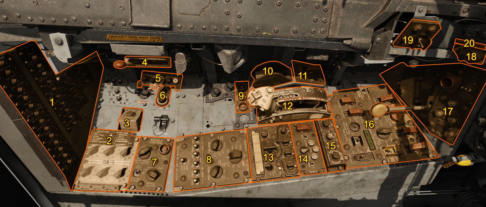
This section will cover general items on the left side of the cockpit. More specific items will be covered in the respective systems section.
| Reference | Name |
|---|---|
| 1 | [Circuit Breaker Panel] |
| 2 | Pylon Loading Selector Switches |
| 3 | [Anti G Suit Pressure Regulating Valve] |
| 4 | Speed Brake Emergency Dump Lever |
| 5 | [Spare Lamps] |
| 6 | [Gun Camera Timer] |
| 7 | Missile Control Panel |
| 8 | Armament Control Panel |
| 9 | External Load Auxiliary Release Button |
| 10 | [Wing Flap Handle] |
| 11 | [Flap Emergency Switch] |
| 12 | Throttle |
| 13 | Command Radio Control Panel |
| 14 | Seek Silence Control Panel |
| 15 | AWRS Control Panel |
| 16 | [Engine and Flight Control Panel] |
| 17 | [Landing Gear Control Panel] |
| 18 | [Arresting Hook Release Button] |
| 19 | [Canopy Switch] |
| 20 | [LABS Yaw Roll Gyro Check Button] |
Circuit-Breaker Panel
Console Floodlight
Anti-G Suit Pressure-Regulating Valve
Camera Shutter Selector Switch
Spare Lamps
Speed Brake Emergency Dump Lever
Console Floodlight
Deleted
Altimeter Correction Card
Throttle
Thunderstorm Light
Wing Flap Handle
Throttle Friction Lever
Flap Emergency Switch
Radio Frequency Card
Console Floodlight
Instrument Panel Floodlight
Canopy Switch
Console Floodlight
Canopy-Not-Locked Caution Light
Arresting Hook Release Button
Labs Yaw-Roll Gyro Check Button
Landing Gear Control Panel
Foot Air Control Lever
Engine And Flight Control Panel
AWRS Control Panel
Seek Silence Control Panel
Command Radio Control Panel
External Load Auxiliary Release Buttons
Armament Control Panel
Gun Camera Timer
Console Air Outlets
AIM-9B/E/J Missile Control Panel
Ground Fire Switch
Pylon Loading Control Panel
Cockpit Right Side
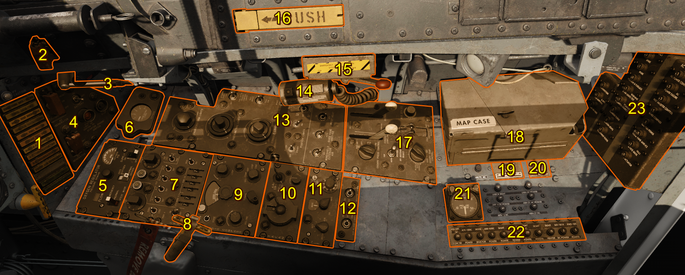
| Reference | Name |
|---|---|
| 1 | Indicator and Caution Light Panel |
| 2 | Standby Instrument Inverter Switch |
| 3 | [Navigation Computer] |
| 4 | [Electrical Control Panel] |
| 5 | Oxygen Regulator Control Panel |
| 6 | [Liquid Oxygen Quantity Gauge] |
| 7 | IFF/SIF Control Panel |
| 8 | [Canopy Alternate Emergency Jettison Handle] |
| 9 | Radio Compass Control Panel |
| 10 | Tacan Control Panel |
| 11 | J-4 Compass Control Panel |
| 12 | [Exterior Floodlight Anti-collision Light Panel] |
| 13 | [Lighting Control Panel] |
| 14 | [Cockpit Utility Light] |
| 15 | [Flight Control Emergency Hydraulic Pump Lever] |
| 16 | [Canopy Internal Manual Emergency Release Handle] |
| 17 | [Air Conditioning Control Panel] |
| 18 | [Map Case] |
| 19 | [Interphone Switch] |
| 20 | [DC Fuel Boost Pump Test Switch] |
| 21 | [Cockpit Pressure Altitude Indicator] |
| 22 | [Circuit Breaker Panel] |
| 23 | [Circuit Breaker Panel] |
Stand-By Instrument Inverter Switch
Console Floodlight
Instrument Panel Floodlight
Liquid Oxygen Quantity Gage
Navigation Computer
Magnetic Compass Correction Card
Console Floodlight
Lighting Control Panel
Canopy Internal Manual Emergency Release Handle
Cockpit Utility Light
Flight Control Emergency Hydraulic Pump Lever
Air Conditioning Control Panel
Gun Sight Ground Test Plug
Thunderstorm Light
Map Case
Interphone Switch
Dc Fuel Boost Pump Test Switch
Circuit-Breaker Panels
Console Air Outlets
Cockpit Pressure Altitude Indicator
Radar Beacon Control Panel
Exterior Floodlight - Anticollision Light Panel
J-4 Compass Control Panel
IFF/SIF Control Panel
TACAN Control Panel
Canopy Alternate Emergency Jettison Handle
Radio Compass Control Panel
Oxygen Regulator Control Panel
Electrical Control Panel
Indicator And Caution Light Panel
Glare Shield and Above
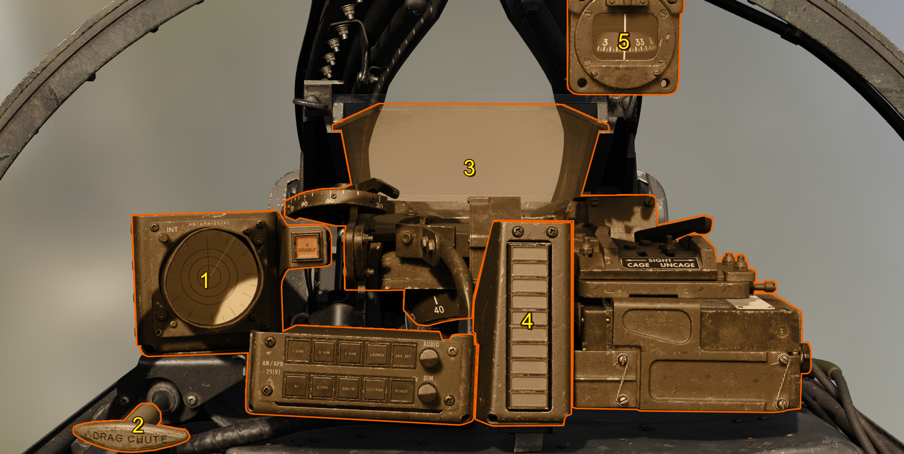
This section will cover general items on the left side of the cockpit. More specific items will be covered in the respective systems section.
| Reference | Name |
|---|---|
| 1 | RHAW Vector Indicator and Control Panel |
| 2 | Drag Chute Handle |
| 3 | A-4 Gunsight |
| 4 | Status Display Lights |
| 5 | Wet Magnetic Compass |
Wet Magnetic Compass
Although not necessarily a primary flight instrument, the wet magnetic compass can be used during system failures that degrade the heading indicators operation.
The compass will lag in the northern hemisphere when turning from north and lead turning towards north. In the southern hemisphere the pilot will observe the opposite behavior. For accelerations in the northmen hemisphere the compass will turn north and in the southern hemisphere the compass will turn south. The opposite is true for decelerations.
The compass card can tilt slightly; however, if the compass is not perfectly level with the magnetic field of earth, error is introduced. Unfortunately, the misalignment error is almost always a factor in readings.
Drag Chute Handle
The Drag Chute Handle will deploy the drag chute when pulled. To release the drag chute, simply twist the handle until it's in the vertical position. After the drag chute is release, you can simply stow the handle.
Indicator, Caution, and Warning Lights
Indicator, caution, and warning lights are placed throughout the cockpit in order to notify the pilot of the status of systems. Each category has a different meaning. Nearly all aircraft cockpit lights are powered by the primary bus.**** CHECK THIS ***
| Category | Meaning | Color |
|---|---|---|
| Indicator | Safe operation status | Green |
| Caution | Possible need for corrective action, not time sensitive | Yellow |
| Warning | Requires immediate action, time sensitive | Red |
The three-position indicator light dimmer switch controls the brightness of the indicator, caution, and warning lights when the instrument panel lights are on. The in-flight control tester panel has its own integral brightness control.
Note
The indicator light test switch changes the indicator lights to bright when released. To dim the indicator lights after using the indicator light test switch, move the indicator light dimmer switch to BRIGHT, then to DIM, and release to the center off position.
Indicator, Caution, and Warning Light Panel
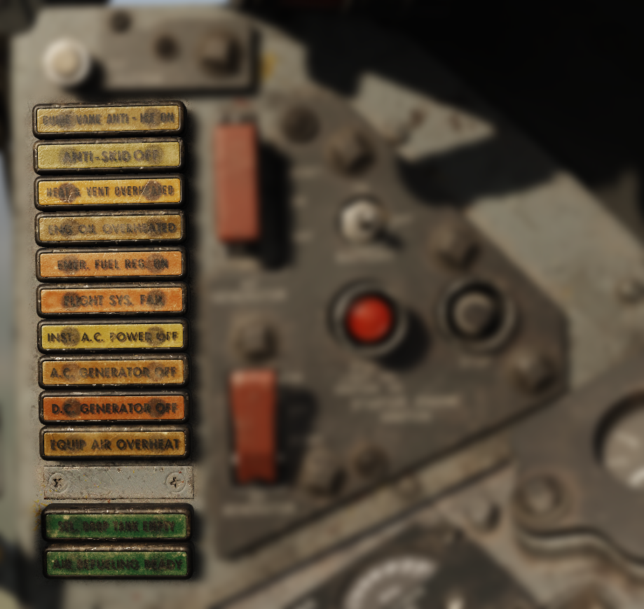
| Light | Category | Cause | Procedure |
|---|---|---|---|
| GUIDE VANE ANTI-ICE ON | Caution | The ice detector unit in the engine guide vane has detected ice or the guide vane anti-ice switch is on | |
| ANTI-SKID OFF | Caution | The anti-skid switch is off or the system has failed | |
| HEAT & VENT OVERHEATED | Caution | ||
| ENG OIL OVERHEATED | Caution | Engine oil temperature is higher than 127°C (260°F) | |
| EMER FUEL REG ON | Caution | Fuel flow is being scheduled by the emergency fuel regulator | |
| FLIGHT SYS FAIL | Caution | One or both flight control hydraulic systems have failed (system 1 or 2) | |
| INST A.C. POWER OFF | Caution | AC Instrument Buses are not Receiving sufficient electrical power | |
| A.C. GENERATOR OFF | Caution | AC generator is off the line | |
| D.C. GENERATOR OFF | Caution | DC generator is off the line | |
| EQUIP AIR OVERHEAT | Caution | The aft electronic equipment compartment has overheated\n Indicates possible failure of the equipment cooling or compartment turbine, failure of the turbine control system, or the ram air is not cooling the compartment | |
| SEL. DROP TANK EMPTY | Indicator | 450 gallon drop tanks are empty ** CHECK ** | |
| AIR REFUELING READY | Indicator | Air refueling switch is in the ready position, does not indicate that all components in the system are operational |
Indicator Light Test Circuit
The indicator light test circuit is a means of merely testing the integrity and operation of the bulbs. All indicator, caution, and warning lights will illuminate simultaneously to exclude the engine compartment fire "FIRE ENG COMP" and overheat "OVERHEAT ENG BURN" warning lights, of which have a separate test circuit. All lights in the test circuit are powered by the primary bus.
Master Caution Light
The master caution light indicated certain indicator or caution lights have illuminated. The master caution light must be put out in order to not inhibit the illumination of additional lights. To extinguish the master caution light, the pilot must press the respective indicator or caution light that caused the master caution to become illuminated.
Note
Illumination of the following lights do not illuminate the master caution light:
- TRIMMED FOR TAKEOFF
- FIRE ENG COMP and OVERHEAT ENG BURN
- CANOPY NOT LOCKED
- SEL. DROP TANK EMPTY
- AIR REFUELING READY
- Ignition-on
- Landing gear warning light
- Radio control transfer system * DO WE HAVE THIS?*
Other
CHECK THIS IS OUR CONFIGURATION PDF PG 75 top left
| Light | Category | Cause | Procedure |
|---|---|---|---|
| CANOPY NOT LOCKED | Warning | The canopy is not fully closed and locked | |
| FIRE ENG COMP | Warning | An overhead or fire has been detected in the forward engine compartment or the fire system is being tested | |
| OVERHEAT ENG BURN | Warning | An overheat or fire has been detected in the aft engine compartment or the fire system is being tested | |
| TRIMMED FOR TAKEOFF | Indicator | The aircraft is trimmed for take off (260 KIAS condition) |
Stick and Throttle
This section covers basic controls of the stick and throttle, for more in depth controls visit the respective system's section.
Stick
The control stick is mechanically connected to the aircraft's hydraulic systems for the aileron and horizontal stabilizer hydraulic actuators.

| Reference | Name |
|---|---|
| 1 | [Damper Emergency Disconnect Switch Lever] |
| 2 | Nose Wheel Steering Button |
| 3 | Trigger |
| 4 | Radar Reject Button |
| 5 | Pickle Button |
| 6 | Trim Hat |
Note
Hide the stick by clicking the base.
Trim Hat
A trim hat actuates the lateral and longitudinal trim servos.
Nose Wheel Steering
The nose wheel steering button is located near the pinky. Pressing the nose wheel steering button engages the nose wheel steering and drops the mechanical link into the nose wheel assembly.
Note
If the nosewheel is not currently aligned with the mechanical linkage, the pilot may need to move the linkage to the current nose wheel rotation by applying the rudder pedals in the desired direction until the system connects.
Trigger and Bomb Button
The trigger and bomb buttons are used to release weapons. Specifically, the triggers used for air-to-air missiles and guns and the bomb button is used to release air-to-ground ordnance.
Note
The trigger consists of two stages. The first stage activates the gun camera and can later be viewed. The second stage fires the gun.
Throttle
Fuel flow to the engine is mechanically controlled by the pilot via the throttle. The engine fuel control system merely delivers and regulates the fuel.

| Reference | Name |
|---|---|
| 1 | Throttle Friction Lever |
| 2 | Speed Brake Switch |
| 3 | Microphone Button |
| 4 | Sight Electrical Caging Button and LABS Vertical Gyro Caging Button |
Throttle Friction Lever
The Throttle Friction Lever adjust how much friction the throttle has. Moving the lever forward increases the friction on the throttle
Speed Brake Switch
The speed brake switch will actuate the speed brake. It has 3 positions, OUT/OFF/IN. The OUT position will deploy the speed brake. The OFF position will stop all movement of the speed brake. The IN position will retract the speed brake
Microphone Button
The microphone button is a press-to-talk actuation that turns the pilots microphone hot over the aircraft's radio.
Sight Electrical Caging Button and LABS Vertical Gyro Caging Button
Pressing the sight electrical caging button stabilizes the sight gyro reticle image by caging the sight gyros. This button also serves as the LABS vertical gyro caging button.
Ejection Seat
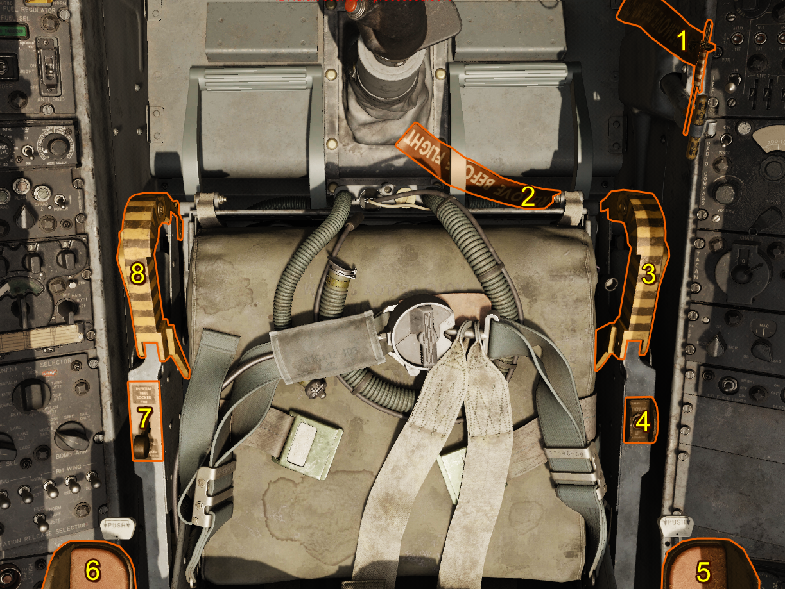
Ejection can be initiated at any airspeed or attitude. The seat is fitted with a ballistic rocket ejection seat catapult which provides the pilot with zero altitude ejection capability and a minimum airspeed and additional vertical stabilizer clearance during ejection of speeds up to Mach 1.
| Reference | Name |
|---|---|
| 1 | Canopy Safety Pin |
| 2 | Seat Safety Pin |
| 3 | Ejection Seat Hand Grip |
| 4 | Seat Height Position Switch |
| 5 | Arm Rest |
| 6 | Arm Rest |
| 7 | Shoulder Harness Inertia Reel Lock Lever INOP |
| 8 | Ejection Seat Hand Grip |
Canopy and Seat Safety Pins
Near the right knee, the ejection seat is fitted with a combined canopy and seat safety pin. The pin must be removed before flight in the cold and dark configuration in order to initiate the ejection sequence.
Additionally, the canopy jettison pin is higher near the right knee and needs to be removed in order to jettison the canopy.
Seat Height Position
The seat vertical adjustment switch provides vertical positioning of the ejection seat. Adjustment allows the pilot to obtain proper eye position relative to the gunsight and instrument panel for normal flight, air-to-air refueling, and landing.
Ejection Seat Hand Grips
The ejection seat is equipped with two ejection handgrips, one located on each side of the seat bucket. The handgrips are mechanically interconnected, allowing the ejection sequence to be initiated by pulling either handgrip or both handgrips simultaneously. To prevent inadvertent ejection, the handgrips are fitted with a handgrip lock lever.
Armrest
Each armrest incorporates an independent release lever. Pushing the lever allows the armrest to be raised or lowered as required for pilot comfort or cockpit access.
Safety Pin Stowage Container
The Safety Pin Stowage Container can be found over the left shoulder on the seat. After stowing the safety pins, you can retrieve them by clicking on this bag.
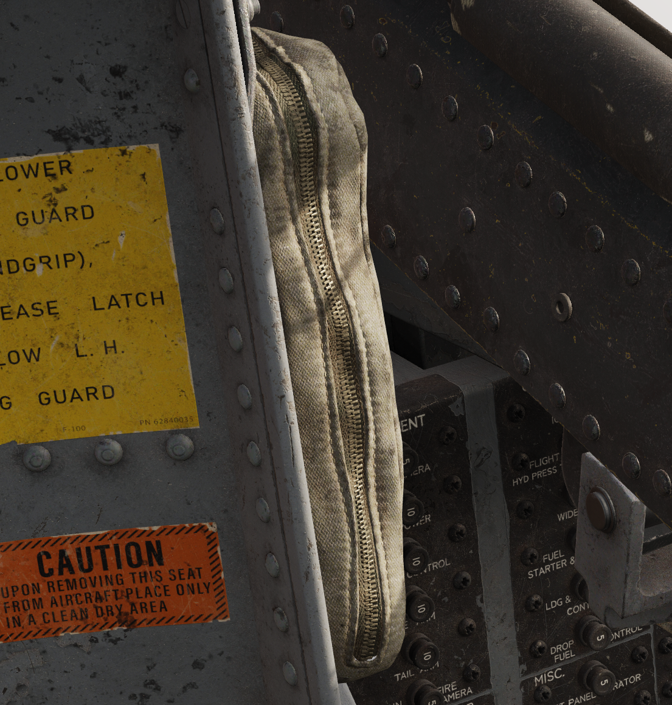
DCS
Checklist
Usage
The checklist can by default be opened with LShift + C.
Procedures

This page displays the procedures split into their different categories. Clicking on a procedure will navigate there.
Procedure Page

This is an example showing the procedure page with some procedures already completed.
Checklist Button

This acts as a home button navigating to the procedures page.
Navigation Bar

The navigation bar shows the current procedure in the centre and the previous (left) and next (right) procedures either side. The next and previous procedures can be clicked to navigate to them.
Show Me

The show me button will highlight the current item in the cockpit.
Checklist Detail

This toggles between the three types of detail.
| Detail | Description |
|---|---|
| Mandatory | Required to complete the current checklist procedure. |
| Abbreviated | Includes checks that would be completed in reality but can be also checked in game. |
| Realistic | Includes checks that would be completed in reality but are not possible to check in game: harness tight for example. |
Advance Checklist Command
Advance checklist command is used to manually check items which are not automatically checked or to bypass an item. The advance checklist command will manually check the highest unchecked item (current item) on the checklist. Once all items are check the advance checklist command will switch to the next procedure. If there is no next procedure then in this case the advance checklist command will do nothing.
Customizing the Checklist
The checklist structure is made from a json file listing the procedures and categories. When a checklist.json is provided in C:/users/<you username>/Saved Games/DCS F-100D this custom checklist will be used. As a starting point you can copy the built-in checklist which is found DCS World/Mods/Aircraft/f-100d/checklist/default.json.
If this checklist fails to load because of a syntax error then that error will be reported in your DCS log located in C:/users/<you username>/Saved Games/DCS/Logs/dcs.log. Example error may look like
ERROR F100 (Main): [Checklist Load Error]: [json.exception.parse_error.101] parse error at line 26, column 35: syntax error while parsing object - unexpected string literal; expected '}'
The general file structure for checklist.json is as follows.
[ // list of categories
{ // category
"name" : "your category name 1",
"procedures" : [
{ // procedure
"name" : "your procedure name 1",
"items" : [
// list of items
]
}
]
}
]
There can be any number of categories, any number of procedures in each category and any number of items in each procedure. The structure of an item is shown below.
{
"text" : "Item to be set",
"value" : "State pilot should set: On or Off etc",
"priority" : 1, // (optional) 1,2,3 for mandatory, abbreviated, realistic respectively. With this key/value omitted the priority will default to 1.
"clickable" : "PNT_FLAP_SELECT", // (optional) the clickable point for show me, for how to find these see below.
"condition" : 0, // (optional) either a number or string, see the conditions section
"once" : true // (optional) applies to only conditions see conditions section
}
Finding Clickables
The easiest way to find clickables is to use a tool to inspect the cockpit model known as model viewer. This can be found in the DCS install files. Running DCS World/bin/ModelViewer2.exe and then File >> Load Model, the F-100D cockpit model can be found DCS World/Mods/Aircraft/f-100d/cockpit/shape/cockpit_f100.edm.
Once loaded the connectors must be displayed.

This will display all the connectors on each switch. Hovering your mouse of the switch for which you wish to add a condition will then display its connector name. This is the name to be used in the "clickable" entry in the item.
Conditions
Conditions check if the current item has been completed. Once a condition is completed it will be marked as completed by being stricken through on the checklist.
The condition entry can either be a number (integer) or a string. When the condition is a number
In case of failure for either method of condition due to incorrect configuration the condition will just simply remain false and have to be manually checked.
Number (Integer)
This represents the position of the switch. There must be a corresponding correct clickable for this to function. The position of any switch is it's integer position counted from its minimum value, this will usually fully aft, or fully down, or fully anti-clockwise. Exceptions to this rule exist but this should work for most switches.
An example is shown below.

| Position | Condition |
|---|---|
| OFF | 0 |
| SIGHT RADAR | 1 |
| MANUAL | 2 |
| LABS | 3 |
| LABS ALT | 4 |
The conditions can easily tested by seeing at which position the checklist automatically checks off your item, this can then be used to confirm your index is correct.
String
These are pre-programmed special conditions that can be used. All these conditions are shown below.
"cartridge_installed""engine_running""engine_spooling""air_connected""air_applied""chocks_removed"
Once
There are two methods of condition checking, the default method always checks the conditions no matter the current item in the checklist. If once is set to true then the condition is only checked when this item is the current item. This is useful for items which must happen once and then are reset. An example is the starter cartridge.
| Item | State |
|---|---|
| Starter Cartridge | Install |
| Engine Master Switch | On |
| Start and Ignition | Press Momentarily |
The cartridge is burned when the ignition button is pressed so if we checked it continuously then it would uncheck itself. So we add the "once" : true key-value pair to this item. The same applies to the Start and Ignition button.
Special Options
Various special options have been added for user quality of life and customization. The following parts below will explain each special option in depth.
These options are located in the xx of DCS World with the DCS: F-100D Super Sabre Selected from the left side module tray.
Gameplay
Cockpit Camera Shake
The cockpit camera shake can be adjusted on this slider as an overall multiplier to global cockpit camera shake.
Pylon Control Armament Assistance
This decides how the pylon loading control panel is setup.
| Setting | Pylon Loading Assistance |
|---|---|
| OFF | None - up to pilot |
| ON SPAWN | Set automatically on spawn. After rearming it is up to the pilot to set |
| FULL | Set automatically on spawn and after rearming complete. |
Autostart Mode
FULL will opt out of any auto start assistance for a complete cold-and-dark start. ENGINE ONLY sets all other switches, knobs, and settings for start; thus, the engine is the only required item for a complete start.
External Customization Options
Victory Kill Markings
Aircraft victory kill markings on the side of the nose portion of the fuselage account (currently) for single player air-to-air and air-to-ground kills.
Enable Kill/Victory Markings will turn off this feature if unchecked.
Cockpit Configuration Options
Seat Position
Adjusting this slide will move the default seat height (and viewpoint). 0 is lowered, while 100 is raised.
Air Start Gun Selector
This option will adjust the default setting of the Gun Selector Knob. Options are SAFE, GUNS UPPER, GUNS LOWER, GUNS ALL, or MISSILE.
Gun Camera Selector
To set the default position of the gun camera selector knob, change to Off, GUN CAM ONLY, STRIKE CAM ONLY, OR BOTH.
Cockpit Customization Options
In order to enable dynamic instrument panel gauge positions, check Enable Custom Instrument Panel. You can then either randomize between known historical layouts, or enter your own custom panel ID. Visit www.GrinnelliDesigns.com/Customize to create a unique layout ID and paste it in the Custom Instrument Panel ID text field.
Gun Camera Settings
Disable Gun Camera Recording
Turning the option to off will disable all gun recording and not generate video files.
Gun Camera Effects
To adjust the default gun camera effects, select between off (to remove entirely), or vintage.
Overrun Time
This slider will adjust how long the gun cameras will continue to record after trigger release. Adjust between 0 and 3 seconds.
Start Delay Adjust
This slider will adjust the time between trigger release and the start of the preset run time. Adjust between 4 to 30 seconds.
Preset Run Time
Adjusts the run time of the gun camera after start delay. Adjust from 2 to 30 seconds.
Note
Total Camera run time after the release of the trigger is the total of both time interval settings (6 to 63 seconds) including the preset overrun time of 0 to 3 seconds.
Warning
Cameras will save AVI recordings in "SAVED GAMES/DCS F-100D/GUNSIGHT CAMERA/"
Strike Camera Settings
Disable Strike Camera Recording
Turning the option to off will disable all gun recording and not generate video files.
Strike Camera Effects
To adjust the default Strike camera effects, select between off (to remove entirely), or vintage.
Overrun Time
This slider will adjust how long the gun cameras will continue to record after pickle release. Adjust between 0 and 3 seconds.
Forward Camera Elevation
The forward camera elevation can be adjusted from 0 degrees to 20 degrees down.
Forward Camera Focal Length
The forward camera uses a variable focal length lens, adjustable from 20mm (wide) to 80mm (narrow).
Rear Camera Start Delay
The delay of the start of the rear camera recording after pickle press.
Rear Camera Elevation Mode
The rear camera elevation can be adjusted from 0-25 degrees for the upper range, or 45-60 degrees for the lower range.
Rear Camera Upper Elevation
Change the camera elevation from 0-25 degrees down.
Rear Camera Lower Elevation
Change the camera elevation from 45-60 degrees down.
Rear Camera Focal Length
The rear camera uses a variable focal length lens, adjustable from 17mm (wide) to 68mm (narrow).
Rear Camera Speed
This setting will change the playback rate of the output footage. 100% is real-time.
Warning
Lower playback rates increase RAM usage of rear camera.
Parameters
Parameters can be used by DCS missions and plugins to read the internal state of the aircraft.
| Parameter Name | Description |
|---|---|
| TACAN_CHANNEL | Number of the tacan channel, note this is only ever an X channel. |
| COMM_FREQ | Frequency of the UHF Radio in Hz |
| RADIO_COMPASS_FREQ | Frequency of the AN/ARN-6 Radio Compass in Hz |
| AFTERBURNER_STATE | 0 for unlit -> 1 for AB lit (note if there is AB failure it will not indicate desired AB only the actual AB state ie unlit) |
| ENGINE_RPM | 0 -> 100, engine rpm in percent |
| FLAP_STATE | 0 -> 1, average position where 0 is flaps retracted and 1 fully extended |
| GEAR_STATE | 0 -> 1, average position where 0 is gear retracted and 1 fully extended |
| TRANSPONDER_CODE | Transponder Code given for Mode 3 code given as a number, 0 if the IFF is not able to respond (off or in standby). |
| GUN_MISSILE_SWITCH | Position of the Gun/Missile Switch with positions: MISSILES (0), SAFE (1), UPPER (2),ALL (3), LWR (4), POD (5) |
| MODE_SELECT_SWITCH | Position of the Mode Selector with positions OFF (0), SIGHT & RADAR (1), MANUAL (2), LABS (3), LABS ALT (4), LADD (5) |
| ARMAMENT_SELECT_SWITCH | Position of Armament Selector with positions OFF (0), RKTS (1), BOMBS (2), DISP (3), NAPALM (4), SPL STORES (5), INOP/SHRIKE (6), TANK JETT (7), DISP JETT (8), PYLON JETT (9) |
Systems
Aircraft Systems
Engine
The F-100D is fitted with the Pratt & Whitney J-57 turbojet engine featuring the J-57-P-21 and J-57-P-23 afterburner nozzles. The -21 was the legacy nozzle that suffered from extensive afterburner ignition issues, reliability, and efficiency problems. The -23 nozzle, taken from the F-102, fixed these issues.
At full military power, the J-57 produces roughly 10,200 pounds of thrust under standard conditions, and 16,000 pounds in maximum afterburner.
The F-100D Super Sabre requires external air to rotate the core in order to start the engine. Otherwise, pilot's utilized a cartridge start mechanism to rotate the core at sufficient speeds without the use of external air.
Caution
The ignitors will be damaged if operated continuously for more than 5 minutes. They should not be energized longer than required to complete an engine start.
Indications
Engine Pressure Ratio Gauge
The engine pressure ratio gauge shows the ratio between the turbine discharge pressure and the pitot pressure.
The gauge shows two adjustable values for takeoff and cruise pressure ratios. Pushing in and adjusting the knob adjusts the takeoff setting. Pulling out and adjusting the knob adjusts the cruise setting.
This gauge is powered by the main AC bus.
Tachometer
The tachometer registers engine speed in percentage of approximate maximum RPM (9980) of the high-speed compressor rotor. The tachometer receives power from a tachometer generator and is therefore independent of the aircraft electrical system.
Oil Pressure Gauge
The oil pressure gauge indicates oil pump discharge pressure above the gear case pressure in pounds per square inch.
Note
Oil pressure will have a tendency to follow the throttle. This condition is normal provided the pressure remains within the limits.
This gauge is powered by the 26 V AC instrument bus.
Exhaust Temperature Gauge
The exhaust temperature gauge shows engine exhaust temperature in degrees celsius. Gauge indications are self-generating type thermocouples which does not need power from the electrical system.
Electrical System

Introduction
The F-100D features two mostly separated electrical systems: the AC System powered by the AC Generator or external power, the DC System powered by the DC Generator, Battery or external power.
These systems are powered independently however in the event of failures it's possible to partially power failed system using the still working system.
DC System
The DC System normally receives power from the battery and DC generator. Optionally power can also be received from external power if connected.
DC Generator
The engine driven DC generator provides power to the DC systems under normal operation.
Note
The DC generator connects at approximately 40% engine RPM.
Note
The DC generator only needs to be reset if an electrical fault causes it to trip off the line.
Battery Bus
The battery bus is connected directly to the battery, so that essential equipment powered by this bus is operable as long as battery power is available, regardless of battery switch position.
The battery is 24 Volt, 24 ampere hour battery. The DC Generator nominally outputs 28 Volts.
The battery bus is connected to the battery bus through the primary bus tie in relay. This relay is energized by the battery bus connecting the battery bus to the primary bus.
If there is not enough power on the battery bus the battery will not be connected, however if the primary bus is being energized from elsewhere (DC generator or External Power) the battery bus can be kept connected even if the battery has insufficient power to keep the relay energized. Turning the battery switch off under this condition will disconnect the primary bus from the battery bus and the battery will no longer be able to be charged.
Primary Bus
Primary bus powers the most essential equipment. Energized by battery bus when battery switch is ON, or energized by DC generator or external power. Energized by transformer-rectifier if DC generator fails.
Secondary Bus
Secondary bus powers less essential equipment. Energized by primary bus when DC generator power, DC ground power or transformer-rectifier power is available to close the secondary bus tie-in relay, where then it is powered by the primary bus.
Tertiary Bus
Tertiary bus powers non-essential equipment. Energized by primary bus when external power or DC generator power is available to close bus tie-in relay, where then it is powered by the primary bus.
AC System
AC Generator
The engine driven AC generator provides power to the AC systems under normal operation. The AC generator is driven by a constant speed drive driven by the engine.
Note
The constant speed drive takes up to a minute at idle power to come up to speed so that the AC generator can come on the line. To expedite this process the pilot can advance the throttle up to 72% (or until the generator comes online).
Note
The AC generator needs to be reset if an electrical fault causes it to trip off the line or the AC generator switch is placed into the off position.
Main Three-Phase AC Bus (115V)
Main three-phase AC bus powers essential equipment which demands AC power. Power is provided by the engine driven AC generator.
AC Instrument Buses (115V and 26V)
There are two instrument buses which power vital instrument equipment. Due to their important these AC buses can both be powered by the DC primary bus using the standby instrument inverter
Controls and Indications
AC Load Meter
Current AC generator load as a percentage of its maximum load.
DC Load Meter
Current DC generator load as a percentage of its maximum load.
INST A.C. POWER OFF Light
Indicates when instrument AC buses are not receiving sufficient electrical power.
A.C. GENERATOR OFF
Indicates when the AC generator is off the line either because of insufficient drive RPM or a fault has tripped the generator.
D.C. GENERATOR OFF
Indicates when the DC generator is off the line either because of insufficient drive RPM or a fault has tripped the generator.
Standby Instrument Inverter
Transfers AC instrument bus power over to the standby instrument inverter. The is a small power interruption as the standby instrument inverter comes up to speed.
Hydraulic System
Introduction
The aircraft has three separate constant-pressure type hydraulic systems: utility and two flight control systems. Each one of the three systems is individually pressurized by a engine driven hydraulic pump to 3000 psi.
In case of engine driven pump failure the secondary flight control system can be driven by a deployable Ram Air Turbine (RAT).
Utility System
This system has a 2.7 gallon reservoir and is pressurized by an engine pump. It supplies hydraulic power to the following units:
- Rudder
- Landing Gear & Doors
- Wheel Brakes
- Wing Flaps
- Nose Wheel Steering
- Speed Brake
- Automatic Flight Control System
- Gun and Purge Door
- The Ram Air Turbine Door
If the pressure in this system drops too low to power the rudder then a valve is triggered automatically to power the rudder from the number 2 flight control system.
Emergency Flap Accumulator
In case of utility hydraulic failure or flap control failure the flaps can be lowered for landing using the emergency flap switch.
Warning
There is only sufficient stored energy to lower the flaps once using this method.
Emergency Nose Wheel Accumulator
In case of utility hydraulic failure the emergency gear release can be used to drop the main gear by gravity, the nose gear on its own cannot solely be dropped by gravity as such an emergency accumulator is provided to drop the nose gear.
Flight Controls 1 & 2 Systems
Two complete independent and simultaneously operating hydraulic systems (Number 1 and Number 2) actuate the primary flight control surfaces. Both of these systems are powered by their own separate engine pump and are completely independent. Each system supplies half the demand of power to the control surface.
Failure of one of these systems does not affect the other. In case of frozen engine or engine pump failure number 2 hydraulic pressure can be maintained by a deployable Ram Air Turbine.
In the case of utility system failure the number 2 system can also provide power to the rudder.
The following items are powered by these systems.
| Item | System(s) |
|---|---|
| Ailerons | 1 & 2 |
| Horizontal Stabilizer | 1 & 2 |
| Horizontal Stabilizer Trim | 2 |
| Rudder (in case of utility failure) | 2 |
Ram Air Turbine (RAT)
This acts as an emergency hydraulic pump for the number 2 system. When engine RPM drops below 40% the centrifugal switch triggers the deployment of the RAT automatically provided there is no weight on the nose gear. The RAT can also be deployed manually using the lever in the cockpit.
If the RAT door is open an audible warning tone can be heard in the pilots headset along with the landing gear handle knob light.
If the pump is no longer needed it must be shut down manually using the lever in the cockpit.
Utility hydraulic pressure is required to open the RAT however in case of utility failure stored energy in the Ram Air Turbine door emergency accumulator is used.
Deployment of the Ram Air Turbine can be tested in flight using the flight control hydraulic system test switch.
Emergency Wheel Brake Pump
In case of utility hydraulic pressure loss an electrical driven pump is used to pressurize the wheel brake accumulators anytime the pressure drops below 750 psi. This pump can be checked for correct function by listening for the pump when the aircraft is cold and dark by depressing the wheel brakes.
Controls and Indicators
Hydraulic Pressure Indicator and Knob
This knob and gauge indicate the pressure in the selected position.
Ram Air Turbine Door Lever
This is used to deploy the Ram Air Turbine manually, this lever will automatically actuate when the Ram Air Turbine is deployed automatically.
Flight Control Hydraulic System Test Switch
Holding this switch at the SYS 2 OFF position will close the test valve removing hydraulic pressure for this system. Moving the switch to RAM TURB ON SYS 2 OFF will continue to remove hydraulic pressure from the number 2 system and provide utility hydraulic power to the ram air turbine causing the ram air turbine door lever to automatically move to the open position.
After testing the lever must be manually moved aft to close the Ram Air Turbine Doors.
Note
Since this test is to be carried out during flight: there is a pressure switch preventing the test valve from being actuated if the number 1 system pressure is lower than 650 psi so as to not cause primary flight control power loss.
Note
A nose gear load switch prevents the number 2 system from being shut off on the ground.
Rudder Hydraulic Test Switch
This spring loaded switch is used to test if the hydraulic summing valve is functioning correctly for the rudder actuator so that, in case of insufficient utility pressure, the rudder can continue to function using the number 2 system pressure.
To test this valve the switch is held in the ALTERNATE RUDDER position to shut off utility pressure, then the rudder can be moved and it should be observed that the rudder pressure jumps from its nominal pressure up to 3000 psi to match the pressure of the number 2 hydraulic system.
Emergency Speed Brake Dump Lever
In case of utility hydraulics failure with the speed brake in the open position it will be necessary to retract the speed brake. Without hydraulic pressure this is not possible so the dump lever can be used to release any hydraulic pressure allowing the speed brake to be retracted by the airflow.
Emergency Gear Release
This deploys the gear using gravity in case of hydraulic failure. The nose gear is still deployed using hydraulic pressure stored in the emergency nose wheel accumulator.
Warning
After this system is used the aircraft must be repaired in order to reset this system.
Emergency Flap Switch
This deploys the flaps to the landing position in case of electrical flap control failure or utility hydraulic failure.
Warning
There is only sufficient stored energy in the emergency flap accumulator to lower the flaps once using this method.
Fuel System
Introduction
The fuel system includes three main tanks in the fuselage and a tank in each wing. Drop tanks may be installed on any of the six wing pylons.
Fuel is automatically balanced in the aircraft using a series of valves and float triggered pumps. All fuel ends up in the forward fuselage tank where it is then passed to the engine through the manifold.
All fuel to the engine passes through a 1.6 gallon inverted flight tank which gives fuel for short periods of negative or zero g.
The aircraft has a single point pressure refueling system which allows for both ground and air-to-air refueling of all the aircraft's internal tanks. This system also has provisions for filling 275 and 335 gallon drop tanks on the intermediate pylons allowing for in-flight refueling on these tanks on intermediate pylons. Other tanks on other pylons cannot be refueled this way.
Fuel Tanks
There are 4 primary fuel tanks.
| Tank | Cells | Capacity (combined in lbs) | Description |
|---|---|---|---|
| Forward Fuselage | Upper, Centre Left, Centre Right, Lower | 2912 | Engine Manifold primarily draws from this tank. |
| Intermediate Fuselage | Left, Right | 1391 | These primarily feed into the forward fuselage however in case of transfer pump failure the right cell can directly feed the engine. |
| Aft Fuselage | Centre | 702 | This primarily feeds into the the forward fuselage however in case of transfer pump failure the aft fuselage can gravity transfer to the intermediate fuselage tank. |
| Wing | Left, Right | 2723 | These feed into forward fuselage by gravity and the scavenge pumps |
| External | Up to one per wing pylon | configuration dependent | These feed into the forward fuselage tank via bleed air pressure. Which pair of tanks feeding depends on the drop tank selector switch position. |
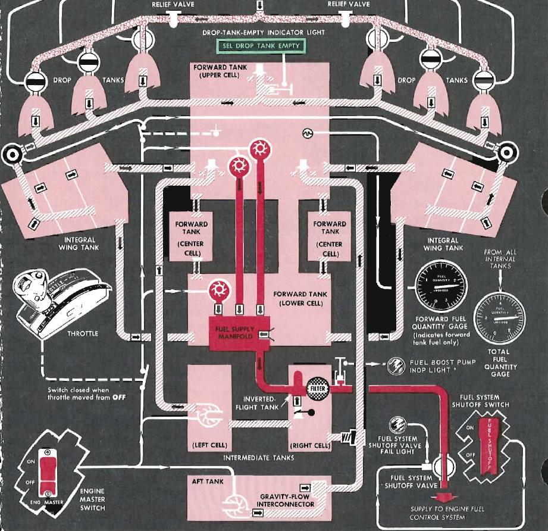
Inverted Flight Tank
The inverted flight tank is the direct feed to the engine. The inverted flight tank can be fed either from the manifold, which is inturn fed by the upper and lower forward fuselage tank, or the intermediate fuselage tank.
The geometry of this tank is designed such that when inverted there is still about 1.6 gallons of fuel for short periods of operation. The length of time of operation before flameout depends on the fuel flow as this will directly impact how fast this inverted flight tank is exhausted. Approximate values for afterburner and military thrust are listed below as a rough guideline.
| Power Setting | Time before Flameout (seconds) |
|---|---|
| Afterburner | 1.5 |
| Military | 6.0 |
Fuel Booster Pumps
There are a total of three boost pumps, all three are located in the forward tank. Two AC pumps are located in the upper cell and one DC pump is located in the lower cell. These all feed into the fuel supply manifold which can also be gravity fed from the lower forward tank cell.
Fuel Transfer (and Scavenge) Pumps
There are two transfer pumps. Normally the intermediate and aft tanks transfer to the forward tanks when the level of the forward tank drops. This is to maintain mass balance but also because the primary feed is in the forward tank.
In case of transfer pump failure it may not be possible to transfer all fuel from the intermediate and aft tanks as such the intermediate tank can directly feed the engine by gravity. The aft tank can also transfer using gravity to the intermediate tank for direct feed to the engine in this scenario.
Warning
Due to the volume of fuel flow when the afterburner is operating it is not possible to keep the forward tank full despite transfers from external and internal tanks to the forward tank. Thus the pilot must monitor the forward fuel tank level so as to not cause an engine flame-out due to insufficient fuel in this tank to feed the engine.
Drop Tanks
Drop tanks can be mounted on any of the wing pylons. However only the 335 gallon and 450 gallon tanks can be refueled when mounted on the intermediate pylons. The list of the available tanks is shown below.
| Tanks (gallon) | Pylons | Mid-Air Refuelable |
|---|---|---|
| 200 | All | No |
| 275 | Intermediate only | No |
| 335 | Intermediate only | Yes |
| 450 | Intermediate only | Yes |
Tanks are pressurized by the engine bleed air when drop tank selector switch is set to any position other than OFF. In case of electrical failure the bleed air valves are normally open position allowing fuel transfer from all external tanks simultaneously.
Warning
Due to the volume of fuel flow when the afterburner is operating it is not possible to keep the forward tank full despite transfers from external and internal tanks to the forward tank. Thus the pilot must monitor the forward fuel tank level so as to not cause an engine flame-out due to insufficient fuel in this tank to feed the engine.
Fuel System Shutoff Valve
The fuel shutoff valve is an electronically actuated valve which can be used to shut off fuel to the engine. In case of valve failure the fuel system shutoff valve fail light will illuminate.
Controls and Indicators
Drop Tank Selector Switch
This selects which external tanks are pressurized by the engine bleed air. In case of electrical failure the bleed air valves are normally open position allowing fuel transfer from all external tanks simultaneously.
Drop Tank Empty Indicator Light
This indicates there is no longer any fuel pressure from the drop tanks. However since the external tank fuel line is shared with the internal wing tank scavenge pumps this light will go out again once the wing tanks begin to scavenge at about 4000 pounds of fuel. This light will then illuminate again one the wing tanks are empty at about 1500 pounds of fuel.
Fuel System Shutoff Valve Fail Light
This light will illuminate if the fuel system shutoff valve is stuck as this could restrict fuel flow to the engine.
Air to Air Refueling Switch
This de-energizes the transfer control valves for the internal wing and external fuel tanks, allowing the single point pressure refueling system to refuel these tanks correctly.
Warning
Do not position this to READY too soon as this prevents about 25 pounds per minute of fuel from being transferred from the internal wing tanks to the forward tank.
Air Refueling Indicator Light
This light simply indicates if the air to air refueling switch is in the ready position. It does not indicate if all the systems are functional.
Fuel Flow Indicator
The fuel flow indicator shows the rate of fuel flow from the fuel control unit to the engine in pounds per hour.
Warning
This gauge does not show fuel flow from the afterburner
This gauge is powered by the 26 V AC instrument bus.
Fuel Boost Pump Light
This illuminates if there is less than 5 psi fuel pressure to the engine indicating a condition where one or more fuel boost pumps are non-functional.
Forward Fuel Quantity Gauge
Indicates total quantity of all forward fuselage tanks.
Total Fuel Quantity Gauge
Indicates total quantity of all internal tanks.
MD-1 Oxygen Regulator
Introduction
The pressure-breathing, diluter-demand oxygen regulator automatically mixes oxygen with ambient air in proportions that vary with altitude. Each time the pilot inhales, a measured quantity of this mixture is delivered. At higher altitudes, the regulator transitions to supplying oxygen at continuous positive pressure, with delivery pressure adjusting automatically to match cockpit altitude.
Controls

Flow Indicator
The flow indicator (blinker) consists of an oblong opening which shows black and white alternating during the breathing cycle.
Oxygen Supply Pressure Indicator
The oxygen supply pressure gauge shows oxygen pressure available to the regulator.
Emergency Lever
The emergency lever should be in the center position at all times, unless an unscheduled oxygen pressure increase is desired. Moving the lever to EMERGENCY provides continuous positive pressure to the mask. When the lever is held at TEST, oxygen at positive pressure is provided to test the mask for leaks.
Diluter Lever
The diluter lever should be at NORMAL, for normal oxygen use, or at the 100% position for emergency oxygen use. With the lever at NORMAL, the regulator supplies a mixture of air and oxygen up to about 30,000 feet which is equivalent to normal breathing at sea level. Beyond 30,000 feet, 100 percent oxygen is supplied on either setting. These operating characteristics are related to the cockpit altitude only.
Supply Lever
The supply lever is used to turn the regulator ON and OFF.
Oxygen Duration
- Normal → Diluter lever set to NORMAL
- 100% → Diluter lever set to 100%
- Emerg ( ) → Diluter lever at 100%, oxygen emergency lever at EMERGENCY, and pressure suit used
- Times are in hours (larger number = longer oxygen duration)
- Liquid O₂ Quantity (L) → each column heading shows remaining liquid oxygen capacity per crew member in liters
- Emergency row → In case of depletion, descend immediately to a safe altitude not requiring supplemental oxygen
- Oxygen regulator gage pressure: constant 70 psi
| Cockpit Altitude (ft) | 5 L Liquid O₂ | 4 L Liquid O₂ | 3 L Liquid O₂ | 2 L Liquid O₂ | 1 L Liquid O₂ | Below 1 L Liquid O₂ |
|---|---|---|---|---|---|---|
| 35,000 and above | Normal 31.4 / 100% 31.4 / Emerg (12.8) | Normal 25.2 / 100% 25.2 / Emerg (10.2) | Normal 18.9 / 100% 18.9 / Emerg (7.7) | Normal 12.6 / 100% 12.6 / Emerg (5.1) | Normal 6.3 / 100% 6.3 / Emerg (2.6) | – |
| 30,000 | Normal 23.3 / 100% 22.7 / Emerg (12.8) | Normal 18.7 / 100% 18.1 / Emerg (10.2) | Normal 14.0 / 100% 13.6 / Emerg (7.7) | Normal 9.3 / 100% 9.0 / Emerg (5.1) | Normal 4.7 / 100% 4.5 / Emerg (2.6) | – |
| 25,000 | Normal 22.0 / 100% 17.5 / Emerg (9.8) | Normal 17.6 / 100% 14.0 / Emerg (7.8) | Normal 13.2 / 100% 10.5 / Emerg (5.9) | Normal 8.8 / 100% 7.0 / Emerg (3.9) | Normal 4.4 / 100% 3.5 / Emerg (2.0) | – |
| 20,000 | Normal 25.0 / 100% 13.3 / Emerg (7.6) | Normal 20.0 / 100% 10.7 / Emerg (6.1) | Normal 15.0 / 100% 8.0 / Emerg (4.6) | Normal 10.0 / 100% 5.3 / Emerg (3.0) | Normal 5.0 / 100% 2.7 / Emerg (1.5) | – |
| 15,000 | Normal 30.2 / 100% 10.7 / Emerg (6.0) | Normal 24.2 / 100% 8.6 / Emerg (4.8) | Normal 18.1 / 100% 6.4 / Emerg (3.6) | Normal 12.1 / 100% 4.3 / Emerg (2.4) | Normal 6.0 / 100% 2.2 / Emerg (1.2) | – |
| 10,000 | Normal 30.2 / 100% 8.6 / Emerg (4.8) | Normal 24.2 / 100% 6.9 / Emerg (3.8) | Normal 18.1 / 100% 5.2 / Emerg (2.9) | Normal 12.1 / 100% 3.4 / Emerg (1.9) | Normal 6.0 / 100% 1.7 / Emerg (1.0) | – |
| 5,000 | Normal 30.2 / 100% 6.8 / Emerg (3.9) | Normal 24.2 / 100% 5.4 / Emerg (3.1) | Normal 18.1 / 100% 4.1 / Emerg (2.3) | Normal 12.1 / 100% 2.7 / Emerg (1.6) | Normal 6.0 / 100% 1.4 / Emerg (0.8) | – |
| 0 | Normal 30.2 / 100% 5.5 / Emerg (3.2) | Normal 24.2 / 100% 4.4 / Emerg (2.6) | Normal 18.1 / 100% 3.3 / Emerg (1.9) | Normal 12.1 / 100% 2.2 / Emerg (1.2) | Normal 6.0 / 100% 1.1 / Emerg (0.7) | - |
AN/APX-72 IFF AIMS System
Introduction
The AIMS system, which utilizes an AN/APX-72 receiver/transmitter (transponder), is used to automatically identify the airplane in response to coded interrogations. Depending on the interrogation mode, the reply is transmitted in modes 1, 2, 3/A, 4, or airplane altitude reporting in mode C.
Note
Due to engine limitations, the settings on the panel have no effect for DCS. However, they are exposed to external tools, such as SRS.
Controls

- Mode 4 Function Switch
- Master Switch
- Reply Light
- Test Light
- Mode 4 Indication Switch
- Mode Selection Switches
- Monitor-Radiation Test Switch
- Mode 4 Selector Switch
- Identification Switch
- Mode 1 Code Selectors
- Mode 3/A Code Selectors
Mode 4 Function Switch
The mode 4 CODE selector has the following positions: A and B to select either code A or code B;a HOLD position to provide a means of retaining the mode 4 code for an additional flight (unless intentionally retained, the code is automatically returned to zero when power is removed after landing); and a ZERO position to enable manually zeroizing the mode 4 code. The mode 4 code selector knob must be pulled out to be moved to ZERO.
Master Switch
The rotary type master switch is moved from OFF to STDBY to turn the system on; NORM or LOW position selects receiver sensitivity; and the EMER position activates emergency operation. The master switch knob must be pulled out to be moved to EMER.
Reply Light
The mode 4 REPLY light (green) comes on when the receiver/transmitter responds properly to a mode 4 interrogation.
Test Light
A green TEST light illuminates to indicate proper operation of each tested mode during the self-test. The test light also comes on when the (radiation) monitor switch is placed at MON (monitor) if the transponder replies properly to interrogations in modes 1, 2, 3/A, or C.
Mode 4 Indication Switch
The audio/light switch has been moved from OFF to AUDIO or LIGHT. (There is no audio signal provided in the present circuit.)
Mode Selection Switches
The mode selection switches M-1, M-2, M-3/A, and M-C, have a forward momentary TEST position, a center ON position, and an aft OUT position. Holding each mode selection switch at TEST initiates a self-test of each respective mode provided the airborne test set is installed.
Monitor-Radiation Test Switch
The RAD TEST position is utilized by maintenance personnel during ground checks and should be set to OFF in flight.
Mode 4 Selector Switch
Mode 4 is selected by placing the mode 4 enable switch from OUT to ON. Mode 4 codes are preset in the mode 4 computer prior to the mission by the use of a code changer key.
Identification Switch
The identifier switch enables transmission of identification of position (I/P) signals in response to interrogations in modes 1, 2, or 3/A, for 15 to 30 seconds. Transmission of I/P signals can be accomplished in three ways: when the switch is momentarily placed at IDENT, or when the switch is at MIC and either the microphone button is momentarily pressed, or the command radio tone button is pressed (while the command radio is on).
Mode 1 Code Selectors
The two mode 1 selectors provide 32 possible code selections.
Mode 3/A Code Selectors
The four mode 3/A selectors provide for 4096 code selections.
Normal Operation
Navigation Systems
Direction Gyro and Compass
Introduction
The direction gyro is used navigation, providing a stable heading reference when the aircraft is turning. This gyro is kept aligned to magnetic north through the use of a remote compass, located in the wing, which gradually aligns the direction gyro whenever the aircraft is not turning.
Components
Direction Gyro
This is a horizontal gyro, suspended tangent to the ground. In addition to the yaw axis the gyro can freely rotate along the pitch axis to remain tangent to the ground. This allows the direction gyro to keep a fixed heading in space.
The direction gyro drives the indications on the radio compass card:
and the heading indicator needle:
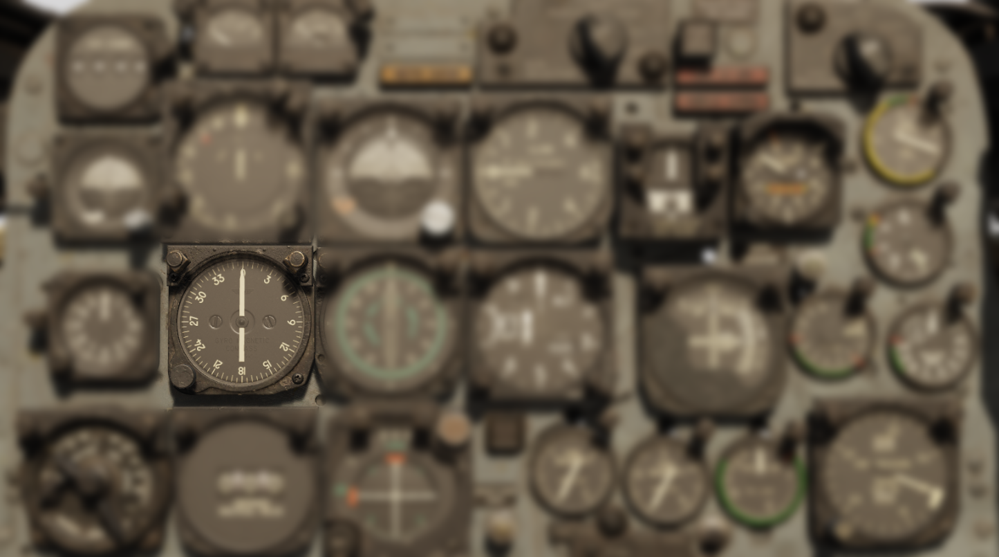
While the direction gyro can keep a fixed heading in space for short periods of time, over long time periods it is subject to different forms of drift. Below are the different forms of drift and their sources.
| Drift | Description | Northern Hemisphere Drift | Southern Hemisphere Drift |
|---|---|---|---|
| Earth | As the earth rotates depending on the latitude (north/south) the apparent direction of gyro will drift. This can be more clearly understood by considering a gyro very close to the north pole, the gyro remains pointed at a fixed angle in space irrespective of the earth rotation, as such the apparent direction will drift as the earth rotates. | increasing | decreasing |
| Latitude Nut | The earth rate drift can be effectively countered by an offset weight on the gyro, known as the latitude nut. This direction gyro does not have a latitude nut but instead is electronically corrected using the latitude knob allowing the pilot to adjust the latitude to keep the gyro accurate. | decreasing | increasing |
| Transport Wander | Similar to drift caused by the rotation of the earth, the aircraft can itself increase or decrease the rotation around the earth by flying east or west. Unlike drift from the earth's rotation there is no compensation for this error. | increasing (east) / decreasing (west) | decreasing (east) / increasing (west) |
| Random Wander | Due to imprecision in components and friction the gyro will naturally precess leading to an error of 1° - 3° per hour, there is also no way to correct for this drift. | random | random |
Slaving
Notably transport wander and random wander cannot be corrected. For this reason the direction gyro is used in conjunction with the remote compass so that each system can cover the other's weakness. The remote compass which is accurate on average over long timescales can be used to adjust the direction gyro back towards magnetic north an electric motor is used to precess the gyro towards the measured magnetic north. This is known as slaving the direction gyro to the magnetic compass. The modes are described below.
| Mode | Description | Slaving Rate |
|---|---|---|
| Direction Indicator | Decouples Direction Gyro from magnetic compass, resulting in no correction. | none |
| Slaving | Slowly slaves the Direction Gyro towards the magnetic compass when the aircraft has not been turning for at least 15 seconds. | 1°/minute |
| Fast-Slaving | Quickly slaves the Direction Gyro towards the magnetic compass when the aircraft has not been turning for at least 15 seconds. | up to 360°/minute |
Upon powering on or after the function selector switch is switched from DG to MAG the direction gyro will enter fast slaving mode.
Warning
If fast-slaving is used when the aircraft is accelerating, turning or pitch attitudes beyond ±30° the direction gyro will be slaved towards an erroneous magnetic compass heading.
Leveling
As the aircraft moves the gyro will gradually topple since it is pointed at a fixed point in space. This can lead to erroneous readings. Electrolytic switches are used to indicate when the gyro is out of level from gravity and a motor is used to precess the gyro back into the plane tangent to the ground.
Thermal Relay
A thermal relay is incorporated into the slaving circuit to control the fast-slave cycle. When the system is switched to the MAG position, the relay heats and closes after a brief delay, supplying high voltage to the slaving torque motor for rapid alignment of the gyro to magnetic north. After the fast-slave period ends, the relay cools and reopens, returning the system to its normal slaving rate. Because the relay must cool fully before another fast-slave cycle can occur, repeated switching between MAG and DG without sufficient cooling time may prevent proper slaving and result in heading errors.
Remote Compass Transmitter (J-4 Compass)
The remote compass is a magnetic field sensing device which detects the current magnetic north relative to the aircraft heading. As described above this signal on average will give an accurate indication of magnetic north and as such can be used to slowly adjust (slave) the direction gyro towards magnetic north if it has incurred any errors.
The remote compass is pendulously suspended in fluid to damp excess movement. The remote compass pendulum is limited to 30° max angle in any direction. The result is that under normal operation the pendulum will find the level and give an accurate indication of the magnetic north.
Under turning, acceleration or pitch attitudes exceeding ±30° the pendulum will be displaced from the correct value leading to erroneous heading indications for magnetic north. These errors can be observed by looking at the annunciator window to see how the measured error swings as the aircraft maneuvers.
Controls
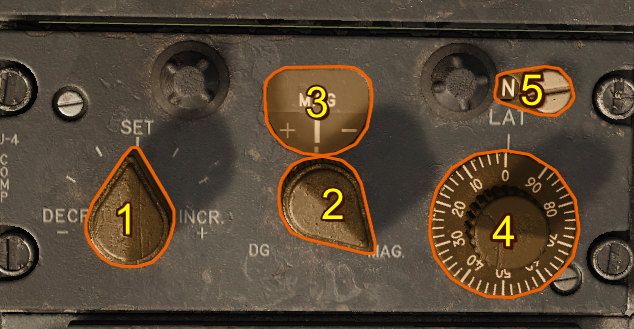
- Synchronizer Control Knob
- Function Selector Switch
- Annunciator
- Latitude Correction Knob
- Hemisphere Switch
Synchronizer Control Knob
The synchronizer control knob is used to manually rotate the direction gyro during slaved or non-slaved operation for rapid orientation of the heading system.
Function Selector Switch
The function selector switch is a two-position switch marked MAG and DG. When the switch is in the MAG position, the signals from the remote compass transmitter are being used and the system functions as a slaved heading system. When the switch is in the DG position, the system is operated in non-slaved mode. Automatic fast slaving occurs for approximately 15 seconds after power is initially applied or whenever the function selector switch is moved from the MAG to DG and then back to the MAG position.
Note
Straight and level flight must be maintained for 15 seconds before attempting to fast-slave the compass indicator. This should permit the rate-switching gyro to restore the magnetic slaving signal to the compass system and allow the compass indicator to synchronize with the correct magnetic heading.
Caution
Two minutes must elapse when switching from the magnetic mode to the directional gyro mode and back to the magnetic mode. This is for cooling of the thermal relay that controls the fast-slave cycle. If the relay is not cooled to permit another complete fast-slave cycle, the indicator may stop at an erroneous reading.
Annunciator
The annunciator indicates the error between the direction gyro and the current sensed magnetic north, the synchronizer control knob can be used for rapid alignment of the heading pointer during slaved operation.
Note
During turns or while accelerating the indication may be erroneous.
Latitude Correction Knob
The latitude correction knob provides a manual latitude input to the gyro system to counteract apparent drift due to the earth's rotation rate. This should be set to the aircraft’s approximate latitude.
Hemisphere Switch
The hemisphere switch is set by the ground crew and is not accessible to the pilot.
Normal Operation
-
Confirm the hemisphere switch has been properly set by ground crew before flight.
-
Turn the function selector switch to MAG for normal, slaved operation.
-
Maintain straight and level flight for at least 15 seconds to allow the remote compass transmitter and gyro to stabilize.
-
If the heading indication is incorrect, rotate the synchronizer switch in the direction indicated by the annunciator until the heading pointer aligns with the magnetic heading.
-
Adjust the latitude correction knob to the aircraft's current latitude to minimize direction gyro drift.
-
If switching between MAG and DG allow 2 minutes to elapse before returning the switch to MAG to ensure the thermal relay cools and the fast-slave cycle can operate correctly.
Radio Systems
ARC-34 UHF Command Radio
Introduction
The onboard radio, powered by the aircraft’s primary bus, enables voice communication within the 225.0 to 399.9 MHz frequency range. Audio signals are processed through the AN/AIC-10 communication amplifier. The system features a control panel with access to 20 preset channels, while also allowing manual frequency selection without altering any preset values.
This radio system employs two receivers: a primary receiver responsible for standard communications, and a guard receiver fixed to a dedicated emergency frequency. The guard frequency is factory-set and cannot be changed without removing the remote-control unit from the aircraft. When selecting a new frequency, an automatic tuning mechanism synchronizes both the transmitter and receiver, completing the tuning cycle in approximately four seconds.
Controls

- Frequency Knobs
- Manual-Preset-Guard Sliding Selector
- Volume Control
- Preset Channel Selector Switch
- Function Switch
- Tone Button
- Frequency Card
Frequency Knobs
At the top of the radio panel, just below the four frequency display windows, are four small frequency selector knobs. Each knob, when turned, adjusts the numeral in its corresponding window, changing the overall frequency. This system allows manual selection of any of the 1,750 available frequencies within the 225.0 to 399.9 MHz range. The frequency 243.0 MHz is reserved as a guard channel.
Manual-Preset-Guard Sliding Selector
The sliding selector controls the method of command radio frequency selection. It is operated by sliding the control through a limited arc across the face of the panel. This control has three positions, MANUAL, PRESET, and GUARD, and is arranged so that when it is in any one position, the other two positions are masked by a semitransparent green glass.
| Selection | Description |
|---|---|
| MANUAL | The preset channel is deactivated and a mask is removed from in front of the four small windows across the top of the panel, revealing the numerals that make up an operating frequency set by the frequency knobs. |
| PRESET | Masks the 4 small windows above the frequency knobs and deactivates the manually selected frequency. This activates the 20 preset channels controlled by the channel selector switch. |
| GUARD | Automatically tunes the transmitter and main receiver to the default guard frequency 243.0 MHz. |
Volume Control
The volume control regulates the sound level of the signal being heard in the headphones from both command receivers. Adequate control of volume is provided, but the volume may not be reduced below a fixed level.
Preset Channel Selector Switch
The channel selector switch controls the selection of 20 preset frequencies by channel number. When the switch is rotated, channel numbers from 1 through 20 appear in the channel indicator window, above the selector. This window is masked when the sliding selector control is placed in any position other than Preset.
Function Switch
Rotating the command radio function switch from OFF turns the command radio on. When the switch is at MAIN, only the main receiver is audible in the headphones. In the BOTH position, the guard receiver and the main receiver are heard simultaneously. The ADF position is operable only with the ADF system and will disconnect the signal from the AN/ARN-6.
| Selection | Description |
|---|---|
| OFF | The radio is inoperative |
| MAIN | Only the main receiver is audible in the headphones. |
| BOTH | The guard receiver and the main receiver are heard simultaneously in the headphones. |
| ADF | Direction finding is enabled and will disconnect the signal from the AN/ARN-6 Radio Compass. |
Tone Button
When the command radio is operating, a continuous tone signal may be transmitted by pressing the tone button. This occurs on the frequency that is set on the transmitter, and it interrupts reception. A side tone is audible in the headphones while the button is depressed. This feature may be used for direction-finding operations in conjunction with other airplanes and ground stations.
Frequency Card
TODO: THIS WILL BE AN INDICATOR CARD BUT REMAINS TO BEEN SEEN IF WE DO THE PRESET WHEEL UNDER THE COVER
Remote Channel Indicator

The remote channel indicator is synchronized to the command radio control panel. The face of the indicator has four windows for display of channel number and frequency. When the selector control is at PRESET, two of the indicator windows are used to display the number of the preset command radio channel. When the selector control is at MANUAL, the four indicator windows display the frequency (in MHz) of the selected channel. With the selector control at GUARD, the two center windows show the letters "GD". All indicator windows are blank when power is off.
Default Preset Channels
| Preset Channel | Frequency (MHz) | ⠀⠀⠀⠀ | Preset Channel | Frequency (MHz) |
|---|---|---|---|---|
| Channel 1 | 225.0 | Channel 11 | 235.0 | |
| Channel 2 | 226.0 | Channel 12 | 236.0 | |
| Channel 3 | 227.0 | Channel 13 | 237.0 | |
| Channel 4 | 228.0 | Channel 14 | 238.0 | |
| Channel 5 | 229.0 | Channel 15 | 239.0 | |
| Channel 6 | 230.0 | Channel 16 | 240.0 | |
| Channel 7 | 231.0 | Channel 17 | 241.0 | |
| Channel 8 | 232.0 | Channel 18 | 242.0 | |
| Channel 9 | 233.0 | Channel 19 | 243.0 | |
| Channel 10 | 234.0 | Channel 20 | 244.0 |
Normal Operation
A complete operational check of the command radio may be made as follows:
-
Before takeoff, check frequencies to be used against those listed on frequency card.
-
Check settings of buttons on frequency control drum with frequency card. To do this, open door to which frequency card is attached. The channel number which corresponds to the preset frequency appears in a window at the left of the buttons. The frequency numbers of this channel are listed above the buttons.
-
Check operation of transmitter and main receiver with sliding selector control in each position.
-
Check operation of the guard receiver using the BOTH position of function switch.
-
For initial channel selection, select a channel other than the one to be used until warm-up is completed, or after warm-up, switch to another channel and then back to the one desired. If the desired channel is selected before warm-up is completed, reduced performance due to mistuning may result.
-
Adjust volume as desired.
-
For manual selection of a frequency that is not included in the preset channels, moving sliding selector control to MANUAL. Use frequency knobs across top of panel to establish desired frequency. (The function switch must be at MAIN or BOTH for this operation.)
-
To obtain transmission and reception of guard frequency only, move sliding selector control to GUARD, and turn function switch to MAIN. This will prevent unequal or garbled reception by cutting out the guard receiver that operates when the function switch is at BOTH.
Emergency Operation
Sudden Loss of Transmission and Reception
If transmission or reception is unsatisfactory, adjust aircraft attitude or heading to improve line-of-sight alignment with the antenna.
Channel Selection After Engine Shutdown
If it is necessary to select another frequency channel, selection should be done as soon as possible after engine shutdown or engine failure, so that electrical power is available to complete selection.
Radio Not Operating
In the case of apparent failure of command radio, attempt operation in alternate positions of sliding selector control and/or alternate positions of function switch. Turn equipment off for several minutes; then turn function switch to type of operation desired. If the protective relay in the tuning mechanism was responsible, this action will restore operation. Check circuit breaker panel for tripped condition of the AN/AIC-10 amplifier.
AN/ARA-50 Automatic Direction Finding System
The AN/ARA-50 is an automatic direction-finding (ADF) and range-finding (TACAN) system for homing on UHF signals.
This system, powered by the primary bus, operates within the frequency range of the AN/ARC-34 command radio receiver and is controlled through the function switch on the AN/ARC-34 control panel.
The system automatically indicates the bearing of UHF signals emanating from selected ground stations, UHF radio-equipped airplanes, or other UHF radio-equipped sources, allowing the use of these frequencies for homing and rendezvous.
The AN/ARA-5O system can be used with the AN/ARN-72 TACAN system to automatically indicate range of the UHF signals emanating from a preselected airplane.
When the AN/ARC-34 function switch is turned to ADF, a changeover relay in the system disconnects the AN/ARN-6 radio compass signal that is sent to the radio magnetic indicator, and connects, in its place, a directional signal from the AN/ARA-50 ADF system. Relative bearing is indicated by the No. 1 (ADF bearing) pointer on the indicator. Range indication is shown on the AN/ARN-72 TACAN range indicator.
To facilitate the reception of UHF signals for ADF bearings, a flush-type antenna is installed in the lower surface of the fuselage centerline.
Normal Operation
-
With the command radio on and warmed up, select a common frequency with the ground station or airplane to be homed on.
-
Turn the AN/ARC-34 function switch to ADF, and the AN/ARN-72 TACAN function switch to A/A.
-
The ADF bearing pointer will move in response to the UHF signal to indicate the bearing, and the TACAN range indicator will indicate the range to the ground station or to the airplane.
NOTE: For normal UHF communication, the function switch should be returned to MAIN or BOTH. However, transmission is possible when the switch is at ADF.
AN/ARN-6 Radio Compass
Introduction
The ARN-6 Radio Compass is an Automatic Direction Finder (ADF) receiver covering the frequency range of 100 kHz to 1750 kHz across four bands. It can be operated as a radio compass for navigation or used to monitor stations for weather reports and general communications reception.
The system employs a Beat Frequency Oscillator (BFO) in both Antenna and Loop modes. For signal conversion, a fixed intermediate frequency of 455.9 kHz is used on Band 1, while Bands 2, 3, and 4 operate at 143.4 kHz. When the equipment is in compass mode, a 900 Hz tone oscillator is engaged to modulate the CW signal as it passes through the IF stages, enabling precise direction-finding capability.
Controls

- CW/Voice Switch
- Band Selector Switch
- Loop L-R Switch
- Volume Control Knob
- Tunig Crank
- Function Switch
CW/Voice Switch
When the Voice-CW Switch is placed in CW, a beat frequency oscillator is energized in the ANT and LOOP position. With this oscillator, the modulated tone can be regulated with the tuning crank.
Band Selector Switch
This four-position switch enables the pilot to select the frequency band of the desired station. Usually the 100-200 kc band is used for marine beacons, 200-410 kc for range and radio beacons, 410-850 kc for some range and Navy radio beacons, and 850-1750 kc for commercial broadcasting.
Loop L-R Switch
This switch operates only when the function switch is in the LOOP position. A rheostat control allows the bearing pointer to rotate at variable speeds.
Volume Control Knob
This control regulates the volume of the signal to the headset in the COMP position. In the ANT and LOOP positions, it controls the sensitivity of the set.
Tuning Crank
The tuning crank is used to tune the desired station for maximum signal strength.
Function Switch
This five-position switch controls the operation of the radio compass.
| Function Selection | Description |
|---|---|
| OFF | The receiver is inoperative. |
| COMP/ ADF | The sensing and loop antennas and loop control circuits are selected. In this position, the loop is automatically rotated so that the bearing pointer points to the station. The COMP/ ADF position is the only one which provides automatic volume control to maintain an even level of volume in the headset. |
| ANT | The sensing antenna is selected and the radio compass is used as a low-frequency receiver. |
| LOOP | The loop antenna is selected. Signal reception depends upon the position of the loop in relation to the station. |
| CONT | This function is inoperative in F-100D aircraft. |
Normal Operation
-
Preflight
- Ensure the Function Switch is set to OFF before applying power.
- Verify that frequency cards and station lists are available for the area of operation.
-
Power On
- Set the Function Switch to COMP/ADF.
- Adjust the Volume Control Knob for comfortable headset audio level.
-
Tuning
- Use the Band Selector Switch to select the appropriate frequency band for the desired station.
- Rotate the Tuning Crank until maximum signal strength is obtained.
- If receiving a CW station, place the CW/Voice Switch in CW and fine-tune with the crank for best tone.
-
Direction Finding
- With the Function Switch in COMP/ADF, the loop antenna will rotate automatically and the bearing pointer will indicate the station’s direction.
- For manual loop operation, set the Function Switch to LOOP and use the Loop L-R Switch to rotate the loop antenna.
-
Monitoring
- To use the radio compass strictly as a receiver, set the Function Switch to ANT.
- Adjust the Volume Control Knob as required for clear reception.
-
Shutdown
- Return the Function Switch to OFF after use.
How a Beat Frequency Oscillator Works
A Beat Frequency Oscillator (BFO) is used in radio receivers to make continuous wave (CW) signals audible allowing the operator to accurately tune the receiver using the produced tone. When a CW signal is received, it consists of a steady carrier with no modulation. On its own, this signal produces no sound in the headset. The BFO solves this by introducing a locally generated frequency that is slightly offset from the received carrier.
Beating Frequencies
When the incoming carrier frequency and the BFO frequency are combined, the difference between them produces an audible tone in the audio range (typically around 400–1000 Hz).
For example, if the station signal is at 300.0 kHz and the BFO is set to 300.9 kHz, the difference is 900 Hz which is heard as a steady tone.
Fine Tuning to Zero Beat
By carefully adjusting the tuning crank, the operator brings the receiver frequency closer to the exact frequency of the station carrier. As the difference between the two signals decreases, the tone lowers in pitch. When the received signal and BFO frequency become exactly equal, the tone disappears, this is called zero beat.
Zero beating allows precise tuning to the station’s exact carrier frequency, which is essential for accurate direction finding and signal clarity.
ARN-72 TACAN Radio
Introduction
The TACAN system is a navigational aid, capable of providing bearing and slant range in nautical miles to a surface beacon.
The AN/ARN-72 TACAN features a powerful receiver-transmitter that functions as an airborne interrogator-responser to provide range information to other AN/ARN-72 TACAN equipped airplanes as well as slant range to surface beacons.
Controls

Dual Rotary Switch - Outer Knob
The outer knob selects the first two digits (0 - 12) of the TACAN channel selection.
Dual Rotary Switch - Inner Knob
The inner knob selects the last digit (0-9) of the TACAN channel selection.
Volume Control Knob
This control regulates the volume of the signal to the headset.
Power Switch
The power switch has four positions: OFF, REC, T/R, A/A.
| Power Switch Selection | Description |
|---|---|
| OFF | Set is inoperative. |
| REC | Bearing information and station identification are available. |
| T/R | Bearing and distance information and station identification are available. |
| A/A | TODO |
Normal Operation
Tacan Range Indicator
Seek Silence System
Introduction
The seek silence system permits either normal operation of the AN/ARC-34 command radio or decoding and coding of voice communications through the command radio. The decoding and coding capability prevents interception of messages when required. The system is powered by the primary bus.
Controls

Power Switch
When the power switch is moved from OFF to ON, power is applied to the seek silence system. The command radio can be operated in the normal manner with the power switch at OFF.
Function Switch
The function switch controls decoding and coding of command radio voice reception and transmission.
-
With the switch at PLAIN, normal operation of the command radio is available, and only uncoded reception and transmission possible.
-
With the switch at C/RAD 1, the system decodes incoming voice communications, and codes outgoing voice communications through the command radio.
The C/RAD 2 position has no function in these airplanes. A mechanical stop prevents the switch from being moved to this position.
Function Indicator Lights
Three dimmable, press-to-test type lights indicate the position selected by the function switch. With power applied to the system, the left (green) light comes on when the C/RAD 1 position of the function switch is selected; the middle (amber) light comes on when the PLAIN position of the function switch is selected.
The right (green) light is inoperative on these airplanes.
Retransmit Switch
This switch has no function in these airplanes. The switch should always be aft (OFF), regardless of the position of the function switch.
Zeroize Switch
The zeroize switch is guarded in the normal, aft OFF position. If it becomes necessary to eject, the guard should be raised and the switch held momentarily at the forward ON position. This zeros out the ground set codes in the seek silence system.
Normal Operation
-
Turn the command radio ON. (Refer to Normal Operation of Command Radio.)
-
Move the power switch to ON.
-
Turn the function switch to PLAIN and establish communications through normal transmission procedures where possible.
-
Turn the function switch to C/RAD 1 and listen for a steady unbroken tone in the headphones for approximately 2 seconds, followed by a double-pitched broken tone. If a prolonged steady tone is heard, it indicates an improper code setting or equipment malfunction, and the function switch should be turned to PLAIN and the power switch should be turned to OFF.
-
Press and hold the mic button for several seconds, then release. The double-pitched broken tone should stop and no further sound will be heard in the headphones. If the broken tone continues, press mic button again and hold for several seconds. If the broken tone continues after three such attempts to clear it, move the function switch to PLAIN and power switch to OFF.
-
Press and hold the mic button. Wait 1/2 to 2 seconds for a single beep tone in the headphones. If beep tone is not heard, press mic button again and wait 1/2 to 2 seconds. If beep tone still is not heard, move power switch to OFF and then to ON, and repeat steps 5 and 6. If this fails to produce the beep tone, turn function switch to PLAIN and power switch to OFF.
-
When beep tone is heard, begin transmission.
Lighting Systems
Indicator and Caution Light Panel

Lighting Control Panel
Exterior Lighting
A position light is on each wing tip, and two are in the trailing edge of the fuel vent outlet fairing, above the rudder. The airplane has two recognition lights, one on the upper fuselage and one on the lower fuselage. The airplane also has two anticollision lights, one on the upper fuselage and one on the lower fuselage. The retractable landing-taxi lights are in the lower surface of the fuselage. The lights extend for use as landing lights until the weight of the airplane is on the nose gear; then the lights extend farther to provide taxi lighting. Some airplanes have a single floodlight in each wing. The lights face inboard and aft for illumination of the aft fuselage and empennage to facilitate visibility during night formation.
Interior Lighting
Most instruments receive indirect lighting from individual fixtures of either the ring or the post type, while some instruments are integrally lighted. The position markings and names of the controls and switches on the consoles and instrument panel are lighted indirectly by edge lighting transmitted through the control panels. Direct lighting of the consoles and instrument panel is supplied by floodlights on the undersurface of the instrument panel shroud and canopy sills. (The indirect lights and floodlights furnish conventional red light.) Floodlighting can be reduced or completely closed off by turning a knob at the end of each lamp. The floodlights are adjustable, and can be directed toward any spot on the instrument panel. A thunderstorm light on each side of the cockpit provides intense white light to reduce the blinding effects of lightning. A standard (Type G-4A) utility light fits into a socket above the right console for general cockpit lighting. The utility light can be removed from its socket to light areas of the cockpit not normally lighted by other interior lights.
Controls

Thunderstorm Lights Rheostat
This controls two white thunderstorm lights powered by the primary bus.
Instrument Lights Rheostat
The outer position controls the flood light for the instrument panel. The inner position controls the indirect lights on the instruments themselves.
Console Lights Rheostat
The outer position controls the flood light for the side consoles. The inner position controls the console back lighting.
Position Lights Switch
This controls the illumination of the position and recognition lights. When flash is selected the position lights flash at a rate of 40 cycles per minute.
Position Lights Dimmer Switch
This controls the brilliance of the position and recognition lights.
Refueling Probe Light
Indicator Light Test Switch
This switch can be used to test all indicator lights in the aircraft however when the switch is released from either position the dimming is reset to the bright position.
Indicator Light Dimmer Switch
This switch controls the dimming state for the indicator lights.
Fuel Quantity and Magnetic Compass Light Switch
Camera Systems
Gun Camera
Introduction
The KB-3 gun camera on the sight, is an electrically driven, magazine-type, 16 mm motion picture camera that photographs the sight reticle and target simultaneously.
Warning
Due to current limitations in DCS the Gun Camera and Strike Cameras can only record when the view is in the cockpit.
Controls

Camera Shutter Selector Switch
The shutter setting of the camera is adjusted through a tertiary-bus powered rotary selector switch. Turning the switch to OFF disconnects power to the camera, camera heaters, and shutter control. Turning the switch to BRIGHT, HAZY, or DULL, depending on lighting conditions, positions the shutter aperture of the gun camera and turns on the camera heaters.
Camera Timer
When the gun camera is used during missile firing, a camera timer with two adjustable time intervals controls continued camera operation after the trigger is released. The first time interval, set before missile launch with the large timer knob, labeled START DELAY ADJUST, represents camera running time (from 4 to 30 seconds) from trigger release to start of the second time interval. The second time interval represents camera running time (from 2 to 30 seconds) after completion of the first time interval, and must be set by the ground crew with the small timer knob, labeled PRESET RUN TIME. Total camera run time after release of the trigger is the total of both time interval settings (6 to 63 seconds) including the preset overrun time of 0 to 3 seconds.
Ground Crew Operation
TODO - How to change film, does film refresh when rearming?
Strike Camera
Introduction
Forward and aft photographic documentation of weapon impacts is provided by two motion-picture cameras installed in a nonjettisonable pod on the underside of the left wing, approximately midway between the fuselage and inboard wing station.

Enable Camera Recording
In order to generate recordings you must first enable recording in the F-100D Special options menu.
Controls
Strike Camera Settings Menu
To access the settings menu the default keybind is Right Ctrl + C.
Type N-9 Forward Camera Settings
The forward camera is a Type N-9, identical to the Type N-9 that is mounted on the sight, except that the pod camera has a 20 to 80 mm variable focal length lens and a larger film magazine. The forward camera is mounted on an adjustable base that permits various clevation adjustments from zero (straight forward) to 20 degrees down.
DBM-4C Aft Camera Settings
The aft camera is a Type DBM-4C that is an electrically driven, 16 mm internally loaded reel type camera. It has a 17 to 68 mm variable focal-length lens. The aft camera mount is adjustable to permit variations in elevation from zero (straight aft) to 25 degrees down and from 45 to 60 degrees down. Camera operation is completely automatic and is initiated by pressing the trigger to the first and/or second detent, or pressing the bomb button. There are no other wing camera pod system cockpit controls. Adjustment for elevation, light conditions, frame speed, lens aperture, and camera overrun time are preset in the pod before flight.
Normal Operation
With the strike camera recording option enabled clips will be generated and saved when the pickle button is pressed.
Defensive Systems
AN/APR-25 Radar Homing and Warning Receiver
Introduction
The AN/APR-25 is a Radar Warning and Homing Receiver. This is a piece of equipment which is designed to detect incoming radar and guidance signals and inform the pilot of any threats.

Theory of Operation
Theory of Radar
To understand the AN/APR-25 theory of operation it is important to understand the basics of radar.

The principle operation of radar is to send out a small burst of radiation (usually microwaves) in a direction and measure the time it takes to receive any reflected radiation. The speed of the radiation is known so the time can be used to estimate the distance to whatever reflected the radiation.
Carrier Frequency (Band)
The carrier frequency is the frequency of the radiation used for detection of objects. Each pulse contains a burst of these radiation at the carrier frequency.

The carrier frequency can be broadly categorized into bands. The bands for the AN/APR-25 are listed below (note these are similar to NATO bands but not exactly identical):
| BAND | Frequency (GHz) |
|---|---|
| India | 7 - 11 |
| Golf | 4.4 - 5.8 |
| Echo | 2.4 - 3.6 |
Whenever radar is referred to be in any of these bands it simply means that the radiation it emits falls within the limits of the band.
Broadly different radars fall into different bands, Early Fan-Song (A etc) (SA-2) fall into the Echo band, later Fan-Song E (SA-2) falls into the Golf band.
Fighter radars are found in the India band (with a few ranging radar exceptions in the Echo band). Golf and Echo radars tend to be search or fire control radars radars. There are no hard rules though as it depends on each weapon system which band it falls in.
Pulse Repetition Frequency (PRF)
It is not enough to send one pulse of radiation as the energy contained within one pulse is very small so it can be difficult to detect. To improve this and to continually update what the radar is detecting the radar will send a stream of pulses. The rate at which these pulses are transmitted is known as the pulse repetition frequency.

Below the various types of pulse repetition frequency are described.
| Category | Pulse Repetition Frequency Range (kHz) | Description |
|---|---|---|
| HIGH | 30 - 300+ | Primarily used in pulse doppler radars. Older pulse doppler radars only have high pulse repetition frequency modes. These saturate the AN/APR-25 and give a constant tone at the maximum frequency the AN/APR-25 audio generator can create. |
| MEDIUM | 3 - 30 | Used in modern pulse doppler radars. Medium pulse repetition frequencies are modulated this means the pulse repetition frequency is quickly varied giving them complex patterns. This can give complex digital sounding tones from the audio generator of the AN/APR-25. |
| LOW | <3 | Used in older pulse and moving target indicator radars. This frequency is also commonly used for ground mapping radars. Older radars use something called pulse repetition frequency jittering to reduce un-wanted clutter, this jitter is the random changing of the pulse repetition frequency and can result in a buzzing sound being heard in the AN/APR-25 audio. |
The AN/APR-25 was only designed to deal with Low Pulse Repetition Frequency threats and thus only these can be correctly categorized. However because of the multiple frequencies used in medium pulse repetition frequency beat frequencies are created which can be heard in the low pulse repetition frequency range. High pulse repetition frequency radars have no such complexity and therefore they simply max the frequency of the AN/APR-25 audio generator.
Equipment
Antennas
The AN/APR-25 uses four antennas to detect incoming radiation. There are two antennas on the nose to detect incoming radiation from the front half and two antennas on the tail to detect incoming radiation from the rear half.
The four antennas are angled at 45 degrees.
There are two antennas on the nose:

and two antennas on the tail:

Each antenna covers approximately a 90 degree cone. The relative strength between the antennas can be used to determine threat detection. Due to the antennas being fixed to the aircraft as the aircraft rolls and pitches the relative direction of the radiation will change and the apparent azimuth on the scope will change also.
Amplifiers
Each antenna routes to three amplifiers - one for each band that the AN/APR-25 can detect. The amplifiers increase the signal to a usable level so it can be passed to the logic analyzer.
Logic Analyzers
There is a logic analyzer for each band. In general the logic analyzers have complex circuitry to measure characteristics about the incoming signals.
The primary characteristics which can be measured are the pulse repetition frequency and the scan pattern of the incoming signals. If the pulse repetition frequency and scan pattern match that of the threat on this band then the respective light is triggered on the billboard.
Audio Generator
The pulses from the amplifiers are directly translated to audio. This can result in a noisy environment when there are lots of radars operating - although the x band disable and aaa defeat can both be used to reduce unwanted threat indications and their respective audio.
Controls and Indicators
The RHAW Set has three main parts. The azimuth indicator which displays incoming signals and their directions and the x band disable switch and billboard which are both used to control

Billboard

- India SAM Indication/Button
- AI Indication
- Golf SAM Indication/Button
- Golf SAM Lobe-on-receive-only (LORO) Indication/Button
- Echo SAM Indication/Button
- AAA/AI Indication/Button
- Launch Indication
- Activity Indication
- AAA Defeat Indication/Button
- Power Indication/Button
- Audio Volume Knob
- Brightness Dimmer Knob
POWER
This button switches the system on, it can take approximately 10-30 seconds (check) for the system to warm up.
Band Indications (India,Golf,Echo)
The threat indications are split into three bands India, Golf and Echo. For each band there are two buttons and on each button there are up to two lights.
The upper buttons/lights correspond to known surface to air missile system radars, the bottom buttons/lights correspond to other threats in the same band.
Each threat indicated for each band are listed below.
| Band | Upper Button | Lower Button | Upper Button Threat | Lower Button Threats |
|---|---|---|---|---|
| India | I SAM | AI | Low Blow (SA-3) | AI WX (All weather interceptors - with conical scanning radars) and AI DAY (Day interceptors with range only radars) |
| Golf | G SAM | G LORO | Fan-Song E (SA-2) | Fan-Song E (SA-2) in lobe on receive only (LORO) mode |
| Echo | E SAM | AAA/AI | Fan-Song (A-D) (SA-2) | Anti-Aircraft-Artillery or E band range only air interceptors |
For a more detailed description of each threat indicator see below.
Upper Buttons/Indicators
The surface to air missile system threat indications are in the form of two lights on the button, one at the top and one at the bottom. The top light indicates a high pulse repetition frequency for the given threat and the bottom light indicates the low pulse repetition frequency.
As a general rule low pulse repetition frequency is used for acquisition or long range tracking and high pulse repetition frequency is used for shorter range targeting and launch.
Each threat indication is displayed when a radar is detected which matches the pulse repetition frequency of the threat's high or low setting. However other radars can erroneously trigger the threat detection if their pulse repetition frequency coincides with the thread frequencies or the system is overwhelmed with many simultaneous signals.
Pressing these buttons begin their corresponding built in test.
Note
Currently the Echo Band Fan-Song is not present in the game as such any Echo band threat indications are erroneous.
Lower Buttons/Indicators
AAA/AI (Anti Aircraft Artillery / Air Intercept)
This light illuminates when the lower half of the Echo band is triggered, this usually indicates Anti-Aircraft Artillery Fire Control Radars or E Band Airborne Intercept Radars.
G LORO
Usually the Fan-Song scans its beam left to right 16 times per second giving the characteristic rattlesnake sound. However this can be easily tracked and emulated by jamming equipment to confuse the tracking circuits. To counter this the Fan-Song operator can switch to Lobe-On-Receive-Only which changes the beam to be stationary and scans only in the receiving antennas. This way it is more difficult for jammers to track the scanning motion of the Fan-Song.
This light illuminates when the Fan-Song E (Golf Band Fan-Song) switches to its Lobe-On-Receive-Only mode, which results in the sound switching from the characteristic rattle-snake sound to a steady tone.
Pressing this button begins the Golf Band LORO build-in-test.
AI (Air Intercept)
This indicates if there is an India band airborne intercept radar detected and what type the system has categorized.
AI WX - This illuminates when a radar with a conical scanning type radar is detected. This is usually indicative of an all weather fighter.
AI DAY - This is supposed to represent day fighters with range only radars, like that the of the Super Sabre's Radar. However this RHAW equipment was invented before the widespread use of monopulse radars as such these more advanced radars do not trip the AI WX detection circuitry leading them to be incorrectly classified as AI DAY fighters despite having much more advanced radars capable of all weather intercept.
ACT/PWR (Activity/Power)
This indicates if there are any Charlie band signals detected which match that of a Fan-Song emitting guidance signals. If there is a correlated fan-song on the Azimuth Display the correlated signal will flash at 3 Hz along with the launch light illuminating.
LAUNCH
The launch indication is given when Charlie band launch and guidance activity is detected
AAA Defeat
This button blanks out the lower half of the Echo band effectively disabling Anti-Aircraft Artillery Radars commonly found in this band. With dense enough signal environment this circuitry can be tripped off resulting in the display of AAA signals despite the AAA Defeat being activated.
The corresponding light on the button indicates whether AAA Defeat is requested.
Audio Knob
Sets the volume of the audio produced by the AN/APR-25
Brightness Knob
Sets the brightness of the indications on the billboard.
X Band Disable Button
The X Band Disable Button triggers the India band disable circuitry. This allows the operator to remove all indications of the india band from the scope.
To re-enable the band simply press the button again. While the band is disabled the light on the button will illuminate.
Azimuth Indicator
The azimuth indicator is the primary display of the AN/APR-25 and it indicates different threats to the pilot their relative strength and their incoming azimuth.

The azimuth indicator displays threats as lines on their relative azimuth to the aircraft. There are three line types corresponding to the three band types.
| Band | Line Type |
|---|---|
| India | Dashed |
| Golf | Dotted |
| Echo | Solid |
The top of the indicator corresponds to the front signals received from the front of the aircraft. The other directions left, right, bottom represent, left, right, aft respectively. There are etched markings at 15 degree intervals to give the pilot an indication of the exact relative azimuth of each incoming signal.
Unlike modern equipment the AN/APR-25 has no memory of incoming signals and thus signals are only displayed when they are being actively received through the antennas. When a signal is received the corresponding audio can be heard.
Built-In-Tests (BIT)
The AN/APR-25 has a series of built-in-tests to verify at any moment the equipment is functioning correctly. These tests check everything piece of equipment with the exception of the antennas. It does this by injecting signals into the pre-amplifiers.
India Band
Pressing and then releasing the I SAM button will begin the India Band test. The test starts with a short low PRF India signal and then high PRF signal for 3 seconds followed by a short low PRF India signal. For each part of the test the corresponding G SAM indication (HI or LO) should illuminate on the billboard.
During the test a flashing or solid X shape made of dashed lines (and accompanying audio) should be displayed with all 4 arms of the X being equal length reaching at least to the third ring of the display as shown below.

Golf Band
The Golf Band test has two different modes one for the regular Fan-Song E operation and one for the lobe-on-receive-only (LORO) operation of the Fan-Song E.
G SAM Test
Pressing and then releasing the G SAM button will begin the Golf Band test. The test starts with a short low PRF Golf signal and then high PRF signal for 3 seconds followed by a short low PRF Golf signal. For each part of the test the corresponding G SAM indication (HI or LO) should illuminate on the billboard.
During the test a flashing X shape made of pearl shaped dots (and accompanying rattlesnake audio) should be displayed with all 4 arms of the X being equal length reaching at least to the third ring of the display as shown below.

G LORO Test
Pressing and then releasing the G LORO button will begin the Golf Band test. The test will display a solid high PRF Golf Band signal (and steady accompanying audio) for about 3 seconds. For each part of the test the corresponding G SAM indication (HI) should illuminate on the billboard.
During the test a solid X shape made of pearl shaped dots (and accompanying rattlesnake audio) should be displayed with all 4 arms of the X being equal length reaching at least to the third ring the same as the G SAM Test.
Echo Band
Pressing and then releasing the E SAM button will begin the Echo Band test. The test starts with a short low PRF Echo signal and then high PRF signal for 3 seconds followed by a low PRF Echo signal for 3 seconds, however this signal should be blanked by the AAA defeat circuit which is automatically enabled during this test. For each part of the test the corresponding E SAM indication (HI or LO) should illuminate on the billboard.
During the first part of the a flashing X shape made of solid lines (and accompanying rattlesnake audio) should be displayed with all 4 arms of the X being equal length reaching at least to the third ring of the display as shown below. During the second part of the test no indications should be present on the azimuth indicator and no audio should be heard however the E SAM LO indication should illuminate.

Weapon Systems
Weapons System
Introduction
The F-100D weapon system is split into two major sections with some minor overlap: air-to-air and air-to-ground.
Air-to-Air
Air-to-air systems include.
Air-to-Ground
Air-to-ground systems include.
Weapon Selection Circuitry
The weapon release circuitry handle all weapon releases from the aircraft both armed and jettison.
The F-100D has a novel method of selecting weapons for the time. The pilot selects the release mode and then the weapon type. The system will automatically select the correct pylons provided those pylons are armed. This is facilitated by the pylon loading control panel which stores the weapon type mounted on each pylon by method of a multiposition switch.
Selecting release modes and weapons is achieved by using the armament selector panel.
Armament Selector Panel
This panel is responsible for:
- Selecting weapons
- Sight and Bombing Modes
- Fuzing Options
- Pylon Selection

Stores Selector
This selects the desired weapons to be released. When a store type is selected the pylons selected for release are determined by the Pylon Loading Control Panel settings. Stores with matching types are armed for release.
Mode Selector
This determines the release type for air-to-ground weapons. The sight and radar are powered in any position other than OFF.
| Position | Description |
|---|---|
| OFF | Weapons, Sight and Radar are unpowered. |
| SIGHT & RADAR | Sight and Radar are Powered and can be used with guns or missiles. Bomb button is energized for release using the gunsight bomb release mode. |
| MANUAL | Sight and Radar are Powered. Bomb-button is energized and can send release pulses to either the Aircraft Weapons Release System if on, otherwise the Basic Armament Control Circuitry. This mode directly sends pulses to release weapons. |
| LABS | Sight and Radar are Powered. Bomb-button is energized and can send activation signals to the LABS for the normal LABS mode (LOFT). |
| LABS ALT | Sight and Radar are Powered. Bomb-button is energized and can send activation signals to the LABS for the alternate LABS mode (Over-the-Shoulder). |
| LADD | Sight and Radar are Powered. Bomb-button is energized and can send activation signals to the LABS for the low altitude drogue delivery LABS mode. |
Bomb Arm Switch
This controls the bomb-arming solenoids in the pylons. This only affects bomb and napalm arming.
| Setting | Fuzes | High Drag Tail Kit Deployed (if bomb has one) |
|---|---|---|
| SAFE | NONE | NO |
| NOSE | NOSE, CENTER | NO |
| TAIL | TAIL, CENTER | YES |
| NOSE & TAIL | NOSE, CENTER, TAIL | YES |
Station Release Selection Switches
These 7 switches simply break the circuit between the aircraft systems and the pylon firing or jettisoning circuitry. When a pylon is in the NORM position the release circuitry is used. When a pylon is in the JETT position the jettison circuitry is instead used. It is advisable to turn all switches to NORM when arming the weapons system as the stores selector will select the correct weapons for drop.
Warning
Turning these switches off do not remove them from the Aircraft Weapons Release System Circuit firing order. Thus disabling some of these while using the AWRS can result in a hung weapon release sequence.
Pylon Loading Control Panel
This panel stores the weapon type information mounted on each pylon as a 7 position switch such that the Armament Selector Panel can correctly select pylons by weapon type.

- Left Inboard Weapon Setting
- Left Intermediate Weapon Setting
- Left Outboard Weapon Setting
- Right Inboard Weapon Setting
- Right Intermediate Weapon Setting
- Right Outboard Weapon Setting
- Pylon Loading Control Panel Latch and Cover
The controls 1-6 all control what the wiring considers mounted to the aircraft. These are automatically set by ground grew upon re-arm or spawn (by default see special options).
Caution
Setting any of these to incorrect loading may result in in-advertent release of weapons.
Note
If automatic pylon loading control panel setting is set in the special options then these will be set by the ground crew when the rearming complete radio message is received.
There are 1-9 possible weapon mountings. These mostly match the weapon types found on the Stores Selector.
| Number | Ordinance | Notes |
|---|---|---|
| 1 | Empty | Nothing Loaded |
| 2 | Fuel Tanks | Important for G-Limit and Jettison |
| 3 | Bombs | |
| 4 | Dispensers | |
| 5 | Rockets | |
| 6 | Special Weapons | Nuclear Ordinance |
| 7 | Missiles | This is functionally the same as empty as the missiles are not control by the armament control panels |
| 8 | Napalm | |
| 9 | Inoperative | Functionally the same as Empty. With the exception of the inner pylons where this indicates the presence of shrikes. |
Status Display Lights
The status display lights indicate various information about the current state of the weapon system.

| Light | Purpose |
|---|---|
| TER EMPTY | This indicates (if a TER is mounted on an inner pylon) if a TER is empty of bombs |
| CBU EMPTY | This indicates (if a CBU Dispenser is mounted) if the CBU dispenser is fully depleted |
| Missile | This indicates if a missile is ready to be fired. The missiles are listed in firing order. |
Weapon Release Circuitry
Basic Armament Control Circuitry
The basic armament control circuitry is used to send release signals to the pylons to release rockets, bombs and dispenser. The basic armament system circuitry is used when the Aircraft Weapons Release System is off.
The basic armament control circuitry can receive bomb pulses from either the manual delivery mode, automatic sight release release cue, or Low Altitude Bombing System release cue. When a bomb pulse is received like the Aircraft Weapons Release System it is up to the weapons selection circuitry forward the pulses to the correct pylons to release ordinance.
All stations which have their respective Station Release Selection Switch armed will receive the forwarded bomb pulse. Any stations which instead have jettison selected will instead convert that bomb pulse to a jettison signal jettisoning the ordinance from the pylon (if it can be jettisoned).
AN/AWE-1 Aircraft Weapons Release System (AWRS)
Introduction
The AWRS provides selectable weapons release quantity and intervals. The AWRS is active any time the release quantity switch is not in the off position. When the AWRS is active any bomb pulse by the bomb-button or Low Altitude Bombing System will result in the AWRS being used to sequence and time bomb or rocket release.
When the AWRS is not active (Quantity Switch in OFF) the basic armament system circuitry is instead used.
Station Release Selection Switches
For the Aircraft Weapons Release System to function correctly all Station Release Selection Switches for the desired weapon type should be moved into either NORM or JETT (depending if armed release or jettison is required). Failure to do so may result in the Aircraft Weapons Release System getting stuck on a pylon where the ordinance is unable to be released due to the Station Release Selection Switch disconnecting the pylon circuitry.
Controls
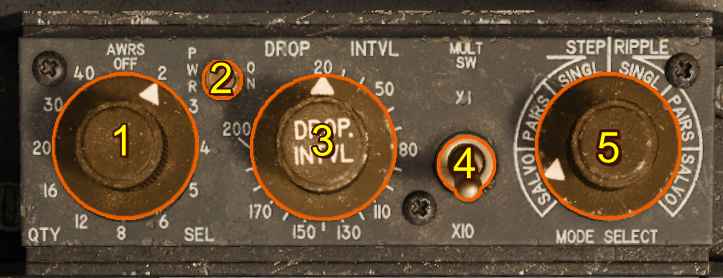
- Quantity Selector Switch
- Power Indicator Light
- Release Interval Switch
- Multiplier Switch (x10)
- Mode Select Switch
Quantity Selector Switch
With the Quantity Selector Switch in the OFF position electrical power is removed from the AWRS system making it inactive. With the Quantity Selector Switch set to any numbered position the AWRS is active and energized.
The selected number provides the AWRS with the quantity of release pulses in ripple modes: Ripple - Single, Ripple - Pairs, and Ripple - Salvo. See operation.
Release Interval Switch
The release interval switch selects the time interval in milliseconds between subsequent pulses from the AWRS. The release interval can be multiplied by ten using the Multiplier Switch
Multiplier Switch (x10)
The multiplier switch multiplies the release interval by ten with x10 set and x1 otherwise.
Modes
Operation
Release modes are responsible for producing pulses which are then distributed to pylons according to the release type. The table below describes how pulses are produced and forwarded to the release type circuitry upon receiving each input signal - either from the manual delivery mode or Low Altitude Bombing System release cue.
| Release Mode | Number of Pulses |
|---|---|
| Step | Input signal produces only one pulse |
| Ripple | Input signal produces a sequence of pulses with intervals specified by the Release Interval Switch and Multiplier Switch. The sequence length is the setting on the Quantity Selector Switch provided the input signal is held on the entire duration of the sequence. If the input signal is released early (ie bomb-button released) the sequence immediately stops. |
There are 3 possible release types. Each type acts on sequence pulses.
| Release Type | Pulse Result |
|---|---|
| Single | Single bomb being released from the next valid pylon in the release sequence if one exists. |
| Pairs | Pair of bombs/rockets will be released from the next valid pair of pylons in the sequence if one exists. |
| Salvo | Every valid/selected pylon will release a bomb/rocket if the pylon is not empty. |
Examples
To assist in understanding the AWRS, below a few examples are shown. Each example assumes there are enough bombs on the plane in the correct configuration to drop the correct number of bombs/rockets.
| Release Mode | Release Type | Quantity Selector Switch | Interval (ms) | Multiplier Switch | Result |
|---|---|---|---|---|---|
| Ripple | Single | 4 | 60 | x1 | 4 bombs will be dropped with an interval of 60 ms between them. |
| Ripple | Single | 6 | 100 | x10 | 6 bombs will be dropped with an interval of 1000 ms (due to x10 switch) between them |
| Ripple | Pairs | 3 | 150 | x1 | 3 pairs of bombs will be dropped (total 6) with an interval of 150 ms between each pair. |
| Ripple | Salvo | 3 | 45 ms | x1 | Assuming the plane is armed with a 1,1,3,3,1,1 MK-82 on each pylon. The first salvo will drop 6 bombs, leaving 0,0,2,2,0,0 on the aircraft. 45 ms later 2 more bombs will drop leaving 0,0,1,1,0,0 and again 45 ms later the remaining 2 bombs will drop. Resulting in a total of 10 bombs being dropped. |
Station Priority and Sequencing
Bombs/rockets will drop in order of priority alternating sides if two valid pylons of equal priority exist. The further out from the centre the higher the priority the pylon has. This means the outer wing pylons have the highest priority and the inner wing pylons the lowest. The AWRS does not consider any pylons which are not active: either because they do not have the correct weapon type. Once a pylon is empty it is no longer considered valid.
Note
Rockets/dispenser pods cannot send an empty signal so once the outer rocket/dispenser pods are empty the AWRS will not automatically step to the inner rocket/dispenser pods as it still assumes they are valid. To use the inner rocket/dispenser pods either Ripple/Step Salvo can be used instead.
Warning
Station Release Selection Switches do not effect the Aircraft Weapons Release System pylon validity. These switches simply break the circuit between the Aircraft Weapons Release System and the pylon circuitry. This has the unintended side effect of causing the Aircraft Weapons Release System to get stuck if any of these pylons are set to OFF.
Below is the priority of each station with a lower number indicating higher priority.
| Left Outer | Left Middle | Left Inner | Right Inner | Right Middle | Right Outer |
|---|---|---|---|---|---|
| 1 | 3 | 5 | 6 | 4 | 2 |
A-4 Gunsight

Introduction
The A-4 Gunsight is a lead computing optical sight. This system has a gyro to assist in computing the lead solution for aerial gunnery. It's primary input is the range which can be achieved either from the onboard APG-30 radar system or manually by the pilot using the optical sight to range.
The system can also be used for ground attack using either a fixed sight where pre-calculated depression tables can be used or the inbuilt automatic bombing mode.
Controls
Mechanical Cage Lever
The mechanical cage lever cages the sight to the boresight. With the sight mechanically caged the reticule is fixed and the size of the reticule is determined by the wingspan lever.

Electrical Cage Button
Pressing the electrical cage button stabilizes the reticule by providing the fire control system with a range of 850 feet. The rigidity of the sight is increased to reduce reticule movement during hard maneuvering.
If this button is depressed the Sight Selector Switch automatically moves to the gun position.
Range Dial
The range dial indicates the current target range in feet being used by the sight. The source of this range can either be the radar or manually if the manual range setting is used.

Radar Range Sweep Knob
This is used to reduce the maximum lock-on distance for the radar to prevent the radar from locking onto undesirable objects.
| Range Limit | Setting (feet) |
|---|---|
| MIN | 3000 |
| MAX | 9000 |
The value linearly changes between the min and max settings.

Manual Ranging Control (Throttle)
The throttle grip is normally in the full counter-clockwise position for automatic radar ranging. Twisting the throttle grip clockwise decreases the range from the max manual range of 2700 feet to a minimum of 12000 feet.
To return the ranging to automatic operation simply rotate the throttle full counter-clockwise.

Wingspan Lever
The wingspan lever changes the size of the reticule to match the angular size of a target at the current indicated range. Setting this to the wingspan of the target can either confirm the radar ranging is correct or be used to manually range by changing the manual ranging until the pipper width matches the target.
Due to the added equipment in the F-100D there is a mechanical linkage which connects the interactive wingspan lever with the actual wingspan lever of the A-4 sight.
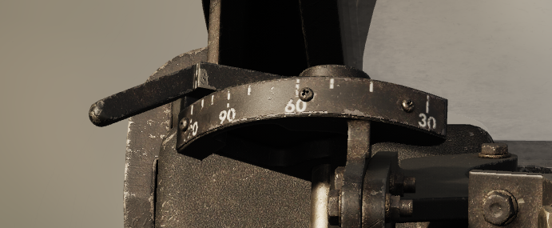
Radar Lock-On Light
When the radar range gate has achieved lock-on the lock light will illuminate.
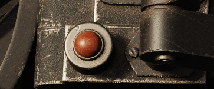
Radar Reject Button
The radar reject button is found on the control stick. If the pilot wishes to reject the current radar lock (for example the current range is much lower or higher than the desired target range) the pilot can press the radar reject button. The radar will continue to increase scan range until it either finds a target or reaches max range where it will then begin the scan again at minimum range.
Pressing the radar reject button will cause the Sight Selector Switch to move to the guns position.
Sight Selector

1. Sight Selector Switch
There are three options rocket, gun, bomb.
| Mode | Range (feet) | Electrically Caged |
|---|---|---|
| Gun | range from radar or manual | Free to move unless electrical cage is depressed |
| Rocket | fixed 850 | Caged to ECSL + Depression Angle |
| Bomb | fixed 850 | Caged to ECSL + 10 degrees - used with automatic bombing mode |
If the radar reject button is depressed this switch automatically moves to the gun position.
2. Sight Depression
This sets the depression from the boresight in NATO MILS when either in the rocket or bomb mode.
3. Target Speed Switch
This switch sets the effective velocity of the own aircraft and the closure rate for the sight calculations. Each setting is phrased in terms of the target velocity.
| Mode | Own Speed (knots) | Target Speed (knots) | Closure Rate (knots) |
|---|---|---|---|
| TR | 300 | 200 | 100 |
| HI | 600 | 500 | 100 |
| LO | 600 | 200 | 400 |
Operation
The A-4 gunsight can be used in either air to air or air to ground operation. To select the mode of operation the sight selector is used - each modes of operation are described below.
Note if the sight select mode is in manual, the armament mode is in bombs or napalm, and the bomb-arm switch is in SAFE the gunsight pipper will extinguish to indicate that a dud would be dropped off the aircraft.
Gun (Air-to-Air)
With the sight selector in Gun and the sight mechanically uncaged the rate gyro inside the sight controls the pipper location to provide a gunnery solution based on the set range. The target speed switch should be set on the closest target speed: HI for High Speed Targets, LO for Low Speed Targets and TR for Tracking Shots where the attacking aircraft is similar speed to the target.
Ranging
The range is controlled either manually using the throttle twist or automatically by the radar.
The radar automatically locks onto any sufficiently strong reflections including the ground. The range is indicated on the range dial. If the range indicated is not that of the desired target, the target can be rejected using the radar reject button this will cause the range sweep to increase and look for targets, if no targets are found and the range sweep reaches the max range it will begin again at the minimum radar range.
The range can be validated in radar ranging or calculated in manual ranging mode by using the wingspan lever to set the wingspan of the current target on the gunsight. Then the target is at the correct range when the wingspan matches the inside radius of gunsight reticule tick marks.
Gunnery
In order to achieve accurate air-to-air gunnery the sight must be allowed to stabilize. The sight must be kept on the target for 1 - 2 seconds. This allows the gyro to settle on the correct solution for the current attack geometry, firing before the sight is stabilized will result in a miss.
Rocket (Air-to-Ground Manual)
With the sight selector in Rocket and the sight mechanically uncaged the Sight Depression controls the depression (in mils) of the pipper from the electrically caged sight line.
In this mode the sight can be used in this mode for manual bombing or rocket attacks.
Bomb (Air-to-Ground Automatic)
The A-4 sight has a mode for automatic bombing. This method makes use of the inbuilt gyroscope calculate the target position and matches this to an inbuilt mechanical computer using information such as airspeed to calculate the bomb trajectory. Once the the bomb trajectory coincides with the target position the bomb release signal is sent.
The bombsight works the principle that the line of sight rate corresponds to the slant range to the target. To facilitate this the pipper is automatically depressed by 10 degrees in the bomb mode. The pilot must then keep this on the target for the system to measure the line of sight rate. One the parameters are met the sight extinguishes and the bomb is released.
Note that the electrical cage must be held up until the target is in the sight to protect the gyros. Then the target must be smoothly followed under the pipper to get an accurate measurement. Any jerks or bumps may cause the bombs to release prematurely.
Sight Lines Definitions
Fuselage Reference Line (FRL)
The defined reference line for pitch for the aircraft. Every other line is referenced from this line.
Mean Fixed Bore Line (MFBL)
The mean fixed bore line is a line drawn from the average position of the gun muzzles drawn parallel to the average boresight of the guns.

True 0 Prediction Sight Line (T0PSL)
The line drawn from the A-4 sight position parallel to the Mean Fixed Bore Line.
0 Prediction Sight Line (0PSL)
A line depressed by some angle from the True 0 Prediction Sight Line to harmonize this line and the Mean Fixed Bore Line at some distance usually 2000 ft.
Electrically Caged Sight Line (ECSL)
A line depressed by 1.1 mils from the 0 Predication Sight Line to account for bullet drop at approximately 850 feet.
This sight line is what is used when the sight is electrically or mechanically caged.
Guns
Introduction
The F-100D has four Pontiac M-39 20 mm revolving cannons. Each cannon can fire at 1500 rounds per minute for a total combined fire-rate of 6000 rounds per minute. Each cannon has 200 rounds for a total of 800 rounds.
Gun Missile Switch
The gun missile switch controls electrical power for the upper, lower guns and the missiles.
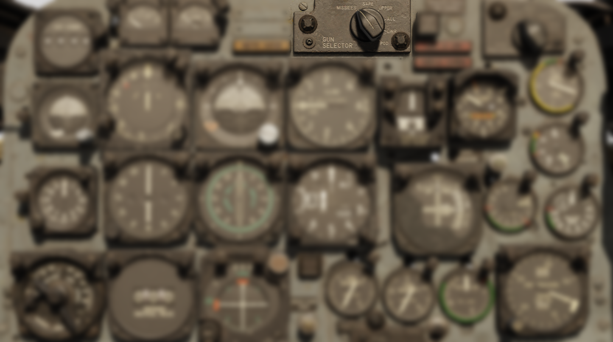
| Position | Description |
|---|---|
| MISSILES | The missile selection provides power to the Missile Control Panel and thus the missiles. Reference AIM-9 Sidewinder Section for missile operation. |
| SAFE | Removes power from the weapons system rendering it safe. |
| UPPER | Energizes the second trigger detent and arms upper guns. |
| ALL | Energizes the second trigger detent and arms upper and lower guns (all). |
| LOWER | Energizes the second trigger detent and arms lower guns. |
| POD | Pod selection is unused on the F-100D |
Note: Gun missile firing circuits are inhibited when weight is on the wheels.
With the gun missile switch in any position the gun camera can be actuated by using the first trigger detent. See the Gun Camera Section for details.
Firing the Guns
Once the gun missile switch is positioned then the UPPER,LOWER or ALL position, weight is off wheels and the aircraft has electrical power, the gun can be fired with the trigger second stage detent.
AIM-9 Sidewinder
Introduction
The AIM-9 sidewinder is a short range infrared guided missile, introduced in 1956. It is the primary air-to-air weapon for the F-100D.
The F-100D can carry two Sidewinder Missiles on a Type IX launcher on each of the inboard pylons, for a total of four Sidewinders.
The sidewinder is a passive infrared guided missile. The missile is aimed using the A-4 Gunsight with the sight mechanically or electrically caged.
The missile generates a tone based on received infrared radiation into its seeker. This tone is transmitted to the pilot headphones. A low growl indicates little to no infrared radiation detected and a high/louder growl indicates a heat source and a possible detected target. The growl only indicates the ability for the seeker to track and does not indicate anything about range or whether the missile is able to maneuver to the target.
Sidewinder Types
The F-100D historically carried 3 different variants of the AIM-9 sidewinder listed below (although some later variants are backwards compatible and the L,M variants are compatible with minor rail modifications that were made to other aircraft in the 90s).
AIM-9B
Introduced in 1957 this is the first sidewinder to be put into service. Seeing significant action in Vietnam.
AIM-9E
This variant was introduced in 1969. It had a small increase in maneuverability and seeker track rate. The seeker gimbal-limit was improved from 25 degrees to 40 degrees making it much more effective against maneuvering targets.
This variant also used a peltier cooled seeker allowing for better thermal sensitivity.
Importantly the max launch G was increased from 2 G to 7.33 G to allow launching while maneuvering something which plagued the early use of the AIM-9B.
AIM-9J
This variant was introduced in 1972 and improved on the AIM-9E by increasing the seeker max track rate again. The time between launch and missile maneuver was reduced to 0.3 seconds from 0.5 in previous versions.
Controls
This panel is responsible for:
- Managing the firing sidewinder order
- Changing sidewinder volume
- Jettisoning sidewinders
- Making the sidewinders safe when not in use.
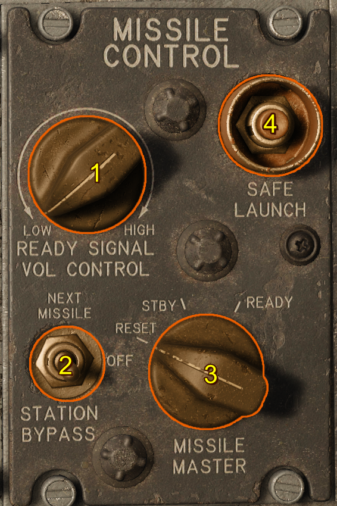
Missile Volume Control
This adjust the volume of the sidewinder in the headset.
Station Bypass
In the event of a defective sidewinder the store can be stepped to the next sidewinder by using the station bypass switch.
Missile Master
This three position switch is normally in the standby position with it spring loaded for the reset position.
| Position | Description |
|---|---|
| Reset (sprungloaded) | Resets the firing order of the sidewinders moving the firing order back to the first sidewinder (left pylon right sub-pylon). |
| Standby | Maintains the sidewinder in a warmed up state while keeping the missile safe. The audio can still be heard in this position. |
| Ready | Arms the sidewinder for launch bringing it to the ready state. |
Safe Launch
Pressing this switch will fire all sidewinders safe (no fuzing or guidance) in their firing order with a 0.5 second delay.
Operation
Setup
The Gun-Missile Switch in the Missile position provides warmup and gyro power to the missiles. The Missile Master Switch sets the ready state of the missiles. In the STBY the sidewinder is kept warmed up and ready. In this position missile audio can be heard but the firing circuits are not armed.
Sidewinder volume can be adjusted using the Missile Control Volume Control.
Firing
To arm the missiles check the Gun-Missile Switch is in the Missile position and put the Missile Master Switch into the READY position. A Sidewinder tone should be heard and the status display lights should indicate a Sidewinder ready to be fired.
Below is the order in which sidewinders are fired, this also corresponds to the light displayed on the status display lights.
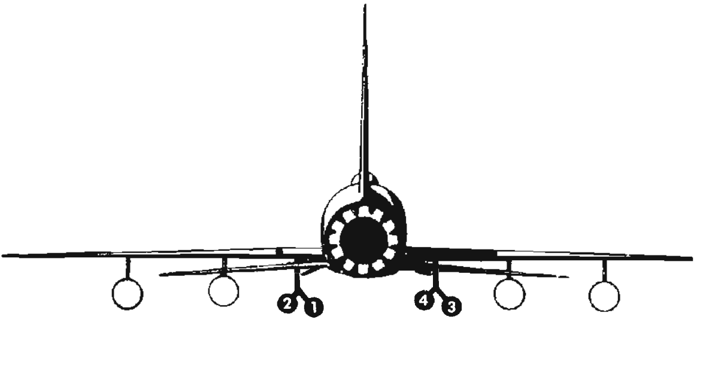
Warning
Releasing the trigger before the launch sequence is complete will cause the missile to be trashed. This is because once the trigger is pressed the seeker is uncaged and the gas generator is fired. These are an irreversible process. This missile will need to be bypassed in future using the station bypass switch.
Jettison
Jettison of sidewinders is not possible the conventional way due to them being mounted on a rail. Thus to be jettisoned they must be fired un-armed without guidance. To do this simply press and hold the Safe Launch for the duration of the jettison process. This will cause the sidewinders to launch one by one with 0.5 second intervals until all the sidewinders are safely jettisoned.
AGM-45 Shrike
Introduction
The AGM-45 Shrike is an anti-radiation guided air to ground missile, introduced in 1965 and employed heavily during the Vietnam war.
The F-100F could carry one Shrike Missile on each of the inner pylons. The F-100D never strictly carried the Shrike missile however the pylon used existed on both models and the avionics between the two are very similar which would allow the same modifications justifying its presence in the game.
The Shrike is passive and guides on the signals radiated by the enemy surface radars. This makes it an ideal weapon for suppressing and destroying surface to air missile and anti-aircraft radars. The antenna inside the shrike is fixed but provides direction information to incoming radar signals allowing the missile to guide to a target provided the radar is within the field of view of the seeker.
Shrike Settings
Radio Seeker
The radio seeker of the shrike determines what radars can be tracked. To target specific radar systems narrow band radio seekers were used. These seekers could be swapped out to attack the specific threat dictated by the mission.
Dive Bypass
In addition to the radio seekers the shrike has two possible guidance modes which have an effect on the trajectory of the missile: loft and dive bypass.
Loft - Dive Bypass (disabled)
When launched the guidance is initially disabled. Once the missile passes climbs above 18,000 ft and then descends below 18,000 ft barometric will the seeker and guidance then be activated. At this point the missile will track anything within it's field of vision that falls within it's radio seeker band.
This mode is intended for stand-off however without additional computer assistance like that added later in the F-4D this mode is difficult to attain accuracy.
Dive Bypass - Dive Bypass (enabled)
Due to the aforementioned difficulty a solution was sought in the field to improve the accuracy of the shrikes. The dive bypass modification was made and this enables the radio seeker and guidance at launch. Sacrificing range for improved accuracy.
Shrikes fired with this setting will guide immediately so for best results it is best to point the missile as close to the target elevation and azimuth as possible.
To assist this the shrike steering needles can be used.
Marker Smoke
Marker smoke can be added to the shrike to assist with locating surface radars in the event of a near miss. Upon impact the shrike will burn a white phosphorous charge to produce a column of smoke indicating the impact point.
Controls and Indications
Audio
The audio of the shrike is generated from the incoming pulses of radiation similar to how the Radar Homing and Warning Receiver generates audio.
Any audio indicates incoming signals detected by the radio seeker which can be used by the guidance system to home the missile on the source of the signal.
Course and Glideslope Needles
When there is a valid shrike powered and selected the course and glideslope needles indicate the error in pitch and yaw between the seeker boresight and the detected incoming radiation. This allows the pilot to steer the aircraft onto the source of the radiation.
Sidewinder Volume Knob
The sidewinder volume knob can be used to adjust the Shrike audio heard in the headset.
Operation
Setup & Firing
- Sight Mode - Manual
- Armament Mode - Shrike
- Pylon Arm - Armed for each pylon
One the Shrike is setup the pilot can point the aircraft at a radiation source to hear the radiation through the Shrike, this indicates a good track. The needles will also become active and point to the source.
To fire depress the weapon release until the missile completes the launch sequence.
AN/AJB-1 Low Altitude Bombing System
Introduction
The low altitude bombing system was introduced to assist with nuclear weapons delivery. It helps the pilots follow a pre-determined trajectory to delivery nuclear weapons with delivery profiles to assist with escape from the effects of the blast.
Controls and Indicators
Pullup Light
Active when LABS is active before the pullup. Once pullup occurs this light goes out.
Roll Indicator
Indicates the current desired roll by the system.
Pitch Indicator
Indicates desired G load in pullup mode and desired pitch angle in pre-pullup mode.
Operation
All LABS delivery modes share the pullup timer. The pullup timer is the time set by the pilot to indicate the time taken for the aircraft to fly from a know identification point (IP) to the pullup point.
There are two variables which determine pullup timer:
- ground speed
- bomb travel distance
- distance from IP to target
The formula:
pullup timer = (distance from ip to target - bomb travel distance) / ground speed
can then be used to figure out what should be set for the pullup timer. Both ground speed and distance from IP to target can be easily chosen during mission planning. The identification point (IP) is chosen to be something that is easy to find and navigate to from the air and near the target area.
Bomb travel distance is determined by the exact release parameters of the bomb: including release angle, true airspeed, target altitude, aircraft altitude, bomb type and wind.
LABS (Loft)
The LABS mode is the one of the normal delivery types for the labs. It is intended for lofting nuclear weapons long distances. The release angle is 50 degrees which lofts the weapon a long distance towards the target.
LABS ALT (Over the Shoulder)
The LABS ALT mode is the alternate method for a loft type delivery. It is intended for lofting a nuclear weapon vertically over the target.
The LABS and LABS ALT mode are identical with the exception of the angle of release. Below is a table of release angles:
| Mode | Delivery Angle (degree) |
|---|---|
| LABS | 50 (LOFT) |
| LABS ALT | 120 (OVER THE SHOULDER) |
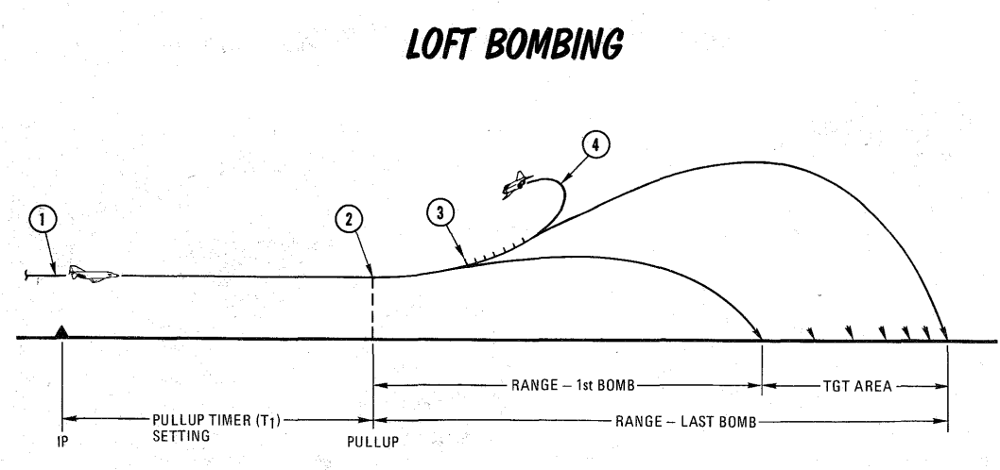
Low Altitude Drogue Delivery (LADD)
Low Altitude drogue Delivery is for delivery drogue assisted nuclear weapons. At the pullup point the pilot is commanded into a 40 degree climb. The release timer determines the release. Once a period longer than the release timer has passed since the pullup point the bombs will be released.
Bomb and Rockets
Below is a table describing release parameters for different weapon types.
MK-82 Low Drag
| Altitude (ft AGL) | Speed (knots) | Angle (degree) | Depression (mils) |
|---|---|---|---|
| 2000 | 400 | 20 | 145 |
| 2000 | 400 | 30 | 120 |
| 3000 | 400 | 20 | 175 |
| 3000 | 400 | 30 | 125 |
MK-82 High Drag
| Altitude (ft AGL) | Speed (knots) | Angle (degree) | Depression (mils) |
|---|---|---|---|
| 250 | 500 | 0 | 140 |
| 500 | 500 | 0 | 150 |
| 250 | 500 | 10 | 70 |
| 500 | 500 | 10 | 105 |
Folding Fin Aerial Rockets (FFAR)
| Altitude (ft AGL) | Speed (knots) | Angle (degree) | Depression (mils) |
|---|---|---|---|
| 3000 | 350 | 20 | 45 |
| 3000 | 350 | 25 | 50 |
| 3000 | 350 | 30 | 45 |
Procedures
Normal Procedures
Cruise
Cruise
- Altimeter - Check RESET vs STBY.
Preflight Check
Preflight Check
Once in the takeoff area:
- Hydraulic pressure gauge selector switch - UTILITY.
- Speed brake switch IN, then OFF (center). Check speed brake UP, then move switch to OFF (center) position.
- Flaps - INTERMEDIATE.
- Takeoff trim - Recheck.
- Pitot heat - ON.
- Canopy - Closed and locked. Hold switch at CLOSE for an additional 2 or 3 seconds after the CANOPY NOT LOCKED goes out to ensure a tight seal.
- Anti-collision light - ON. (As required)
Startup
Startup
Pneumatic Start
- Starter and ignition button - Press momentarily.
-
External air - APPLY.
Caution
The starter is limited to one minute of continuous operation during any 5-minute period.
Caution
If there is no tachometer indication of engine rotation or rise in oil pressure within 10 seconds after air is applied, stop the starter cycle by pressing the starter and ignition stop button.
-
Throttle - IDLE at 12% to 16% rpm. Check ignition indicator light is on, a fuel flow indication and fuel boost pump inop light out.
Caution
If the fuel boost pump inop light remains on, the de boost pump has failed. Abort the flight. If ignition does not occur within 20 seconds after throttle is advanced to IDLE, return throttle to OFF and continue to motor the engine for 30 seconds; then press starter and ignition STOP button momentarily to abort the start. Except for exhaust overtemperature, subsequent starts may be attempted.
-
Exhaust temperature — Check. Light-up should occur (as indicated by rising exhaust temperature) within 20 seconds after the throttle is moved to IDLE. If exhaust temperature exceeds start limits, return throttle to OFF and continue to motor the engine for 30 seconds; then press the starter and ignition STOP button momentarily to abort the start.
-
40% to 45% rpm — Have external air power reduced and disconnected; dc external power disconnected.
Caution
If the engine fails to accelerate to 55% to 60% (idle) rpm within 1 minute (80 seconds is permissible on the first start of the day) after light-up, return throttle to OFF and continue to motor the engine for 30 seconds; then press the starter and ignition STOP button momentarily to abort the start. Except for exhaust overtemperature, subsequent starts may be attempted.
-
Idle rpm — Engine instruments checked. Engine rpm should increase steadily, with the throttle at IDLE, to 55% to 60%, and oil pressure should increase steadily to a minimum of 40 psi; then check all engine instruments for proper indication.
Caution
If the ignition-on light fails to go out after idle rpm is obtained, the starter centrifugal cutout switch has failed and the starter and ignition STOP button must be pressed momentarily to shut down the starter and de-energize the ignition circuit.
Cartridge Start
Note
The minimum interval between cartridge starts is 5 minutes; however, no more than two cartridge starts can be made in any 60-minute period, regardless of the interval between starts. Perform one pneumatic start for every four cartridge starts to assist in removing cartridge residue from the starter.
Note
If external dc power is not available, place radio switch at OFF until start is completed.
-
Starter and ignition button — Press momentarily.
Caution
If there is no tachometer indication of engine rotation or rise in oil pressure within 10 seconds after starter and ignition button is pressed, stop the starting cycle (ignition) by pressing the starter and ignition STOP button momentarily.
-
Throttle — IDLE at 2% to 4% rpm. Check ignition indicator light-on, a fuel flow indication and fuel boost pump inop light-out.
Caution
If the fuel boost pump inop light remains on, the DC boost pump has failed. Abort the flight.
-
Exhaust temperature — Check. Light-up should occur (as indicated by rising exhaust temperature) within 8 to 10 seconds after the starter and ignition button is pressed. (Cartridge burnout time is approximately 18 to 20 seconds.)
Caution
If engine fails to accelerate to 55% to 60% (idle) rpm within 1 minute after light-up, or if exhaust temperature exceeds start limits, return throttle to OFF and allow engine to unwind; then press starter and ignition STOP button to abort start. Except for exhaust overtemperature, another start may be attempted.
Caution
If the ignition-on light fails to go out after idle rpm is obtained, the starter centrifugal cutout switch has failed and the starter and ignition STOP button must be pressed momentarily to shut down the starter and de-energize the ignition circuit.
-
Idle rpm — Engine instruments checked. Engine rpm should increase steadily, with the throttle at IDLE, 55% to 60%, and oil pressure should increase steadily to a minimum of 40 psi; then check all engine instruments for proper indication.
Taxiing
Taxiing
- Brakes - Check.
- Flight Instruments - Check. Perform an operational check of all flight instruments during taxi.
- Anti-skid switch - ON. While taxiing, move the anti-skid switch to ON and test brake operation.
Takeoff
Takeoff
Normal Takeoff
Note
Takeoff at Military Thrust is not recommended.
- Brakes - Release.
- Throttle - AFTERBURNER. Afterburner should be selected immediately.
-
Engine pressure ratio gauge - Check. Following after burner light up. The pointer should be within the arc of the takeoff index marker, or takeoff should be aborted.
Note
During takeoff, nose wheel steering should be used up to 100 KIAS. Then rudder control can be used.
-
Acceleration - Check.
-
Nose rotation. At the proper takeoff speed for weight and configuration, begin to slowly apply back stick pressure at a rate that the airplane will assume takeoff pitch attitude at the proper takeoff speed.
Warning
Early nose wheel lift off can result in excessive ground roll.
-
Takeoff. Maintain proper takeoff pitch attitude after lift off until proper airspeed is obtained as to prevent settling.
Crosswind Takeoff
Execute a normal takeoff. Application of rudder pressure after rotation will be needed to keep the airplane aligned with the runway. Counter drift at lift off by lowering the upwind wing. Takeoff speeds may need to be increased in crosswind or gusty conditions.
Afterburner (AB) Operation During Flight
Afterburner Operation During Flight
Note
At low altitudes while using afterburner, the fuel transfer rate from the drop tanks may be too low to maintain a constant level in the internal tanks and use of internal fuel may occur before drop tank fuel is depleted.
The afterburner can be operated at any throttle setting between 89%±2 rpm and full military thrust by moving the throttle to the outboard position. The pressure ratio will momentarily drop, indicating that the exhaust nozzle has opened. Under normal operation, the afterburner should light between 2-5 seconds. If afterburner light-up has not occurred, return the throttle to the inboard position.
-
Throttle - Outboard into AFTERBURNER position. Retard the throttle after light-up to minimize the possibility of engine overtemp.
Caution
If the exhaust nozzle fails to open when afterburner is selected, a loud explosion and surge may occur followed by rpm reduction and increase in exhaust temperature.
-
Throttle - Inboard, to shut down afterburner.
Descent
Descent
In order to decrease the possibility of canopy fogging, the canopy and windshield defrosting systems should be operated at the highest flow possible throughout the flight. Sufficient flow will preheat the canopy to keep the glass temperature above the cockpit dew point. Preheating is necessary as there is not enough time during rapid descents to heat the canopy. Maintain engine speed above 83% rpm.
- Pilot heat - ON
- Canopy and windshield defrost lever - As required.
- IFF/SIF/AIMS - Set as required.
- Altimeter - Set and check RESET vs STBY.
- Damper switches - STANDBY (OFF).
- Oxygen - As required.
- Fuel quantity - Check.
Landing
Landing
Before Landing
On approach:
- Hydraulic pressures - Check. Monitor utility system during approach and landing.
- Safety belt and should harness - Tightened.
- Anti-skid - ON.
- Speed brake - As desired.
- Gear - DOWN. Check for down and locked indications.
- Flaps - DOWN. Flaps alone will provide sufficient drag. However, speed brake may be also be used.
Normal Landing
- Throttle - IDLE. Retard throttle to IDLE during flare or at touchdown.
- Touchdown.
- Flaps - UP.
-
Nose wheel steering - Engage.
Caution
In the event of a nose wheel steering system malfunction, disengage and maintain directional control with rudder and differential braking.
Caution
If the rudder pedals are not neutral when the nose wheel steering button is pressed, the steering may not engage. If the steering does not engage, move the rudder pedals in the direction of the nose wheel setting.
Note
In order to prevent disengagement of nose wheel steering because of pitching, hold forward stick pressure on landing roll out.
-
Drag chute - Deploy.
- Employ normal braking.
- Speed brake - UP.
Normal Landing Technique
Gear should be lowered below 230 KIAS to avoid damage. As an example with a 24,000 pound airplane, the pattern should be flown 20 KIAS above the final approach speed. An rpm of 83%-87% will be required. Arrive on final at 165 KIAS, 300 ft AGL, and one nautical mile from the runway. This will result in a glide path of between 2.5 and 3 degrees with an impact point just short of the runway. Small adjustments of airspeed can be corrected with pitch and small adjustments in descent rate can be corrected with throttle. However, larger adjustments must be made with coordinated use of both throttle and speed brakes. To achieve a precise touchdown point in the flare, it is imperative to maintain stabilized descent rate and airspeed. Reduce thrust the thrust as necessary prior to touchdown.
Note
10 knots fast equates to approximately an additional 1000 feet of ground roll.
Speed Brake Operation
Speed brake operation in addition to flaps, or alone, the airplane buffet will increase. The flaps alone will provide sufficient drag resulting in an appropriate flat approach with high power settings. Thus, use of the speed brakes is not necessary expect as speed control, if required.
Flap Technique
Raising the flaps immediately after touchdown will increase the normal load on the nose and main landing gear, allowing the brakes to produce a higher braking moment. This will provide higher deceleration.
Drag Chute Operation
The drag chute (in real life) has been tested up to 180 KIAS without failure. Thus, reliability is greatly increased at lower speeds if the airplane is allowed to slow below 150 KIAS before deploying the drag chute.
Tail Skid
The tail skid is installed only for the purpose of protecting the airplane from serious damage in the tail area during landing. Occasional contact of the tail skid is normal operation. However, the tail skid may not protect the aircraft under high sink rates.
Landing Pattern
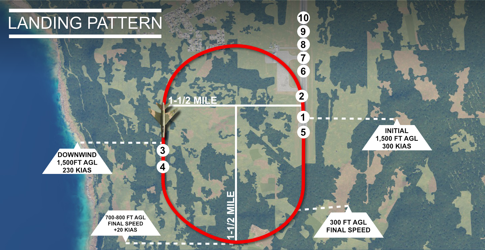
| Step | Explanation |
|---|---|
| 1. | Initial - 300 KIAS |
| 2. | Speed brake - AS DESIRED. Position throttle to maintain pattern speed and altitude |
| 3. | Gear - DOWN. Checked for down-and-locked indications. |
| 4. | Flaps - DOWN. |
| 5. | Throttle - IDLE. Touchdown at recommended speed |
| 6. | Wheel brakes - CHECK. |
| 7. | Flaps - UP. |
| 8. | Nose wheel steering - ENGAGE. |
| 9. | Drag chute - Deploy. |
| 10. | Speed brake - UP. |
Landing Without a Drag Chute
Sufficient braking will be available without the drag chute on a dry runway. Aerodynamic braking can also be used to dissipate energy down to a speed where mechanical braking is much more effective with less energy absorption.
Minimum-run Landing
Minimum-run landings should be preformed in the following manner: touch down at the recommended speed for weight and configuration, lower the nose wheel as soon as the main gear make contact with the runway, engage nose wheel steering, retract the flaps, and deploy the drag chute. Apply a steady but light force to use brakes as required and increase as the airplane slows. Once the flaps are fully retracted or the airplane is slower than 110 KIAS, heavier braking may be used. If the anti-skid system cycles or skids, release brake pressure.
Note
No damage is being done if the anti-skid system cycles, however every cycle or skid increases stopping distance by 10%.
Note
With anti-skid on, if full brakes are used until a complete stop, abrupt pitching may results. If this is the case, decrease pedal pressure.
Slippery Runway Landing
On a slippery runway, braking action will very immensely. Use anti-skid and aerodynamic braking to the max extent possible. The drag chute should be deployed while aerodynamically braking. Rudder will be the primary means of directional control as nose wheel steering and braking may be ineffective. Rudder control will be available down to 60 KIAS.
Landing In Crosswinds
When landing in crosswinds, approach and touchdown speeds should be increased. Increase speeds by 1/2 the crosswind velocity component plus 1/2 the gust factor. For example, a 45 degree off runway crosswind of 10 knots gusting 20 knots, approach speed should be increased by 10 knots.
On final, crab into the wind or forward slip to align the fuselage with the runway. If crabbing, perform a forward slip before touchdown. If the crosswind component exceeds 25 knots, perform a no-flap landing. At touchdown, lower the nose wheel and engage nose wheel steering. A higher tendency of weather vaning into the wind exists when the drag chute is deployed. Thus, careful consideration that the nose wheel steering is operating before deploying the drag chute is essential. If directional control is lost, the drag chute must be jettisoned.
Caution
If the rudder pedals are not neutral when the nose wheel steering button is pressed, the steering may not engage. If the steering does not engage, move the rudder pedals in the direction of the nose wheel setting.
Touch and Go Landing
- Normal touchdown.
- Throttle - Military Thrust.
- Speed brake - UP.
-
Flaps - Intermediate.
Caution
Exercise care when moving the flaps to INTERMEDIATE. Moving the flaps to UP will necessitate increased rotation speed.
-
Trim. Trim the airplane for takeoff.
-
Nose rotation. At rotation speed, begin to slowly rotate the airplane so that the airplane will assume the pitch angle required for takeoff at the takeoff speed.
Warning
Ensure proper airspeed has been obtained before rotation. Do not rotate the aircraft excessively nose high. If over rotated, reduce the angle of attack back to the proper takeoff pitch attitude.
-
Takeoff. Maintain proper takeoff pitch attitude after lift off until proper airspeed is obtained as to prevent settling.
- Gear - UP.
- Flaps - UP. Increase pitch angle during flap retraction, to prevent settling.
Other
Airplane response will be sluggish at landing speeds and more stabilizer deflection is required for similar responses. High instantaneous demand above available rate will stick may stiffen or lock up. This only means the stabilizer is moving at the maximum available rate and does not mean the stabilizer has stopped moving, but the pilot is demanding a higher rate. This can be avoided by flying a smooth power-on approach and reducing over control. It is possible to over control to the point where the hydraulic system will meet the criteria to illuminate the FLIGHT SYS FAIL caution light. The illumination of the caution light and stick stiffening can occur independently. Refer to the hydraulic system section for more information on the conditions of the FLIGHT SYS FAIL caution light. Stick force lightning occurs 5 KIAS below the touchdown speed of the 1G condition. If encountered, stick force lightning is not dangerous and normal flying should be continued. Over controlling or "jamming" can cause porpoising. Excessive sink rate, airspeed, descent rate, or a combination of all three can also cause porpoising. Excessive touchdown speed may cause the nose wheel to touchdown first, which may induce an excessively nose high response. Pushing forward will cause the cycle to be repeated. If porpoising is encountered, hold the stick slightly aft of neutral while advancing the throttle to execute a proper go around procedure. Attempting to counteract the porpoising will only aggravate the airplane response.
Caution
If using aerodynamic braking in crosswind conditions, rudder authority may be insufficient to prevent weather vaning. The crosswind landing procedure should be used.
Go-Around
Go-Around
- Throttle - Military Thrust.
- Speed Brake - UP.
- Gear - UP. Only after adequate airspeed has been obtained.
- Flaps - UP. At final approach speed for weight and configuration.
- Clear traffic.
-
Throttle - Adjust to obtain required thrust.
Note
During a go-around in military thrust, about 250 pounds of fuel will be required. If afterburner is required, about 300 pounds of fuel will be used.
Warning
If using the emergency fuel control system, advance the throttle cautiously to prevent engine over-speed or compressor stall.
Warning
If afterburner is used and light up is not achieved, considerably less than military thrust will be output. Return the throttle inboard immediately to regain military thrust.
Engine Shutdown
Engine Shutdown
- Brakes - Hold.
- Standby inverter - ON.
- Throttle - 72% for at least 30 seconds.
- Speed brake switch - As desired.
- Nose gear ground safety pin - Installed.
- Throttle - OFF.
- Engine master switch - OFF.
- Standby inverter - OFF.
- Battery switch - OFF.
- Control stick - Rotate. To bleed off flight control hydraulic system pressure.
- Landing gear doors - Open. Pull landing gear emergency lowering handle to open landing gear wheel well doors.
Weapons Employment
Manual Delivery
For specific delivery profiles see the weapon release tables
Rockets
The procedure below will setup the weapons so that the bomb-button will fire a salvo of rockets.
1. Rocket Arming
- Armament Control Panel: Stores Selector - RKTS
- Armament Control Panel: Mode Selector - MANUAL
- Set All Armament Control Panel: Station Release Selection Switches - NORM
2. Aircraft Weapons Release System (AWRS) Setup
It is suggested to ripple fire rockets - this is the what this procedure will describe.
- Set AWRS Quantity Selector - desired number of salvos
- Set AWRS Release Interval - desired interval (50 ms if no preference)
- Set AWRS Mode Selector - RIPPLE SALVO.
3. Sight Setup
- Set Sight Selector Switch - ROCKET.
- Set Sight Depression - desired depression (otherwise about 10-20 mils)
- Set Mechanical Cage Lever - UNCAGE
Bombs
The procedure below will setup the weapons so that the bomb-button will drop a series of bombs.
1. Bomb Arming
- Armament Control Panel: Stores Selector - BOMBS
- Armament Control Panel: Mode Selector - MANUAL
-
Set All Armament Control Panel: Station Release Selection Switches - NORM
-
Set All Armament Control Panel: Bomb Arm Switch - NOSE & TAIL (NOSE only if using high drag bombs to be dropped in low drag mode)
2. Aircraft Weapons Release System (AWRS) Setup
It is suggested to ripple fire rockets - this is the what this procedure will describe.
- Set AWRS Quantity Selector - desired number of bombs
- Set AWRS Release Interval - desired interval (otherwise about 150 ms)
- Set AWRS Mode Selector - RIPPLE SINGLE.
3. Sight Setup
- Set Sight Selector Switch - BOMB.
- Set Sight Depression - desired depression (see depression chart)
- Set Mechanical Cage Lever - UNCAGE
Sidewinder
- Missile Master - READY
- Gun Missile Switch - MISSILES
- Check Missile Status Light is Green (if not use Station Bypass to step until a working missile can be found, trigger can also be used to step but runs the risk of inadvertently firing a sidewinder). Tone should be heard.
- Listen for higher pitched tone indicating a valid heat source and depress second stage trigger to fire the missile.
Emergency Procedures
Takeoff Emergencies
Afterburner Failure During Takeoff
Afterburner Failure During Takeoff
-
THROTTLE — INBOARD. Immediately move throttle inboard out of AFTERBURNER range to MILITARY to ensure exhaust nozzle closing.
Warning
If afterburner is used and light up is not achieved, considerably less than military thrust will be output. Return the throttle inboard immediately to regain military thrust.
-
EXTERNAL LOAD — JETTISON (if necessary), If the airplane starts to decelerate or altitude cannot be maintained, it must be assumed that either the exhaust nozzle failed to close or that the gross weight is too great to continue. In either case, jettison external loads to lighten airplane gross weight.
Note
In most cases, if external loads are jettisoned at the time of afterburner failure, the takeoff can be successfully completed in Military Thrust.
Engine Failure During Takeoff
Engine Failure During Takeoff
- ABORT. If engine failure occurs on takeoff before the landing gear handle is raised and a barrier engagement/ arrestment is feasible, abort.
If barrier engagement/arrestment is not feasible or the landing gear handle has been raised, proceed as follows:
- EXTERNAL LOAD — JETTISON.
-
ZOOM IF POSSIBLE AND EJECT.
Warning
Any upward vector with wings level will increase changes of survival.
Illumination of the Fuel Valve Fail Light
Illumination of the Fuel Valve Fail Light
Steady or flickering illumination of the fuel valve fail light indicates a failure or impending failure of the fuel system shutoff valve, the light system circuitry, or a component of the system. If this light comes on during takeoff, action is required. The exact procedure to follow varies with each set of circumstances and depends upon ground speed, length of runway, overrun remaining, etc. The following procedures are recommended as guidance in making a decision.
- ABORT. If the fuel valve fail light illuminates steadily or flickers during ground roll, and sufficient runway or overrun is available, abort the takeoff.
If the fuel valve fail light illuminates steadily or flickers during takeoff and it is not feasible to abort, the following is recommended: 1. Continue takeoff. 2. Land as soon as possible. Do not cycle the fuel system shutoff switch. Cycling the switch may cause the fuel system shutoff valve to close and, if a failure has occurred, it may not reopen. This will cause a flame-out and restart will not be possible.
In-flight Emergencies
Air Start
Air Start
Immediate Restart
Warning
If a flame-out occurs when the aircraft is in landing configuration at less than 2,000 feet above the terrain, EJECT if CAUTION the landing is not assured. DO NOT under oot any circumstances attempt an airstart below 2,000 feet.
- Throttle - Check Inboard.
- Air Start Switch - On.
- Fuel Regulator Selector Switch - Emergency. Adjust throttle setting to match actual engine rpm as closely as possible.
Air Start Procedures
- Throttle — OFF.
-
Air start switch — ON. Move air start switch to ON. (Ignition is not available until the throttle is moved outboard and forward from OFF.)
Note
If during an air start the ignition-on and dc generator caution lights do not come on, the air start switch may be defective. Start attempt should then be made using the starter and ignition button to provide engine ignition. However, if this button is used, the de generator switch should be turned OFF during ignition to prevent possible premature discharge of the battery.
Note
All nonessential electrical equipment should be turned off to conserve battery power after the flame-out occurs. DC generator power (which controls the secondary and tertiary bus output) is not available at engine speeds below 40% rpm. When the air start switch is ON, the dc generator is cut out of the electrical system. This prevents the battery from powering the generator at low engine rpm if the reverse-current relay operation is faulty. DC generator output is restored when the air start switch is returned to OFF.
Note
AN/ARC-34 communication equipment is powered by the primary bus and is operative when the de generator or battery is on.
*** FIGURE 3-4 pg 3-11 air start envelope*
-
Throttle - IDLE. As soon as possible after these conditions are met, move throttle to IDLE, if start attempt is made on the normal fuel control system. Fuel flow should be about 640 to 850 pounds per hour. Slowly advance throttle to point where positive thrust is indicated by a pronounced increase in fuel flow and a corresponding increase in exhaust temperature. Then adjust throttle to desired rpm. If start attempt is to be made on emergency fuel control system, move fuel regulator selector switch to EMER and advance throttle to IDLE. When engine rpm reaches 60%, advance throttle slowly. This procedure is recommended at altitudes above 30,000 feet to prevent compressor stalls and engine overtemperature.
-
Air start switch — OFF. Return air start switch to OFF to de-energize ignition system and restore normal generator operation as soon as air start is completed (engine at idle).
-
Flight control emergency hydraulic pump lever (RAT) — OFF.
If Engine Fails To Start
- Ignition circuit breaker — Check in.
- Start attempt — Repeat. (Use emergency system if first attempt was made on the normal fuel system.) Retard throttle to OFF if there is no indication of light-up within 20 seconds after throttle has been moved to IDLE.
- If air start unsuccessful - Eject.
Afterburner Failure
Afterburner Failure
If loss of afterburner occurs during flight, proceed as follows:
- Throttle - Inboard. Immediately move throttle inboard out of the AFTERBURNER range.
Note
This closes the electrically operated afterburner shuttle valve in the engine-driven fuel pump unit, so that the fuel flow to the afterburner spray bars is shut off and the exhaust nozzle closes.
-
Overheat-warning light — Check light OUT. If the engine burner compartment overheat-warning light was not on when failure of the afterburner occurred, attempt to relight the afterburner watching for any indications of abnormal operation.
-
Relight afterburner — Check afterburner operation. If all cockpit indications of afterburner operation are normal after relight, continue afterburner operation.
Note
If afterburner light-up is not obtained within 5 seconds after the throttle is moved outboard to the AFTERBURNER range, the throttle should be moved inboard from this position and then, after 3 to 5 seconds, returned outboard to AFTERBURNER, to recycle the afterburner igniter.
Ejection
Ejection
The following information should be observed, when ejection must be accomplished:
- Under level flight conditions, eject at least 2000 feet above the terrain whenever possible.
- Under spin or dive conditions, eject at least 10,000 feet above the terrain whenever possible.
- Attempt to slow the airplane as much as practical before ejection by trading airspeed for altitude.
- If the airplane is not controllable, ejection must be accomplished at whatever speed exists, as this offers the only opportunity of survival. At sea level, wind blast will exert medium forces on the body up to 450 knots IAS, severe forces causing flailing and skin injuries between 450 to 600 knots IAS, and excessive forces above 600 knots IAS. As altitude is increased, these speed ranges will be proportionately lower.
- The automatic-opening safety belt must not be opened manually before ejection, regardless of altitude. The belt will open within 1 second after the seat ejects. If the belt is opened manually, seat separation will be too rapid at high speeds and the automatic-opening feature of the parachute is eliminated. This would require the parachute to be opened by use of the parachute arming lanyard © or the ripcord handle.
Low Altitude Ejection
During any low-altitude ejection, the chances for successful ejection can be greatly increased by zooming the airplane (if airspeed permits). Ejection should be accomplished while the airplane is in a positive climb. This will result in a more vertical trajectory for the seat and crew member, thus providing more altitude and time for seat separation and parachute deployment.
Ejection – Mouse Interaction
-
Right-click and hold the handgrip lock lever to disengage the safety lock.
-
While holding the lock lever (right-click), left-click either handgrip to initiate the ejection sequence.
-
Releasing the lock lever without pulling a handgrip will cancel the ejection action.
The standard DCS emergency ejection command Left CTRL + E (pressed three times) will initiate the ejection sequence provided the seat ground safety pin has been removed.
Canopy
Canopy
Canopy Jettison
During an emergency when the canopy must be jettisoned, but ejection is not contemplated, the canopy alternate emergency jettison handle must be used.
-
Canopy alternate jettison emergency handle lockspring — Remove. The lockspring on the canopy alternate emergency handle must be removed before the canopy is jettisoned.
-
Canopy alternate emergency handle - Pull.
Engine Failure
Engine Failure
Failures of jet engines may be the result of improper fuel scheduling, caused by a malfunction of the fuel control system or incorrect operating techniques. An air start can usually be made to restore engine operation, provided time and altitude permit. If the fuel system shutoff valve fail light comes on in flight simultaneously with loss of power, it indicates the shutoff valve is partially closed. Do not cycle the fuel system shutoff switch. A landing should be made as soon as possible. If the light comes on in flight and a flame-out occurs, the throttle setting should be reduced and as a last resort cycle the fuel system shutoff switch in an attempt to open the valve and extinguish the light. Regardless of light indication, attempt an air start.
In case of obvious mechanical failure within the engine, air starts should not be attempted. When a frozen engine is suspected because of zero rpm indication but no obvious mechanical failure has occurred, normal utility hydraulic pressure and engine oil pressure will indicate the engine is rotating and the accessory drive is operating, and an air start should be attempted. If there is no indication of utility pressure or oil pressure, a successful air start is unlikely.
In case of obvious mechanical failure within the engine, air starts should not be attempted. When a frozen engine is suspected because of zero rpm indication but no obvious mechanical failure has occurred, normal utility hydraulic pressure and engine oil pressure will indicate the engine is rotating and the accessory drive is operating, and an air start should be attempted. If there is no indication of utility pressure or oil pressure, a successful air start is unlikely.
-
Throttle — OFF.
Note
The ac generator is taken “‘off the line” automatically when the throttle is moved to OFF, Power can be restored to the 3-phase ac instrument bus by moving the standby instrument inverter switch to ON.
-
Flight control emergency hydraulic pump lever (RAT) — ON. The emergency pump must be started to power flight control system No. 2 if the engine is frozen. If the engine is windmilling, the engine-driven pump output is sufficient for control during air start procedures, Because of the reduced total output, control movement must be kept to a minimum, whether the engine is windmilling or frozen, during operation on the emergency pump.
-
Damper emergency disconnect lever — Press.
- Glide — 220 knots IAS.
-
Nonessential electrical equipment — Off. Turn off all nonessential electrical equipment to reduce battery load.
Caution
At engine speeds below about 40% rpm, de generator output is not available, and the battery becomes the only source of electrical power. Usable battery power is available for about 6 to 22 minutes.
-
Attempt air start. If air start is not successful — Eject.
AC Generator
AC Generator
Any actual generator failure or generator over-voltage causes the generator to be removed from the ac system until the condition is corrected. Failure of the ac generator, shown by the ac generator-off caution light coming on, causes loss of all ac power.
Note
If a flame-out occurs under these conditions, attempt an air start if remaining altitude and fuel permit.
The instrument ac power-off caution light also comes on to show loss of the 3-phase instrument bus. generator failure, the standby instrument inverter switch should be moved to ON, to restore power to the 3-phase instrument bus (and to the single-phase instrument ac bus which is powered by the 3-phase instrument bus). Once power is restored to these busses, the instrument ac power-off caution light goes out. There is no alternate means of powering the main 3-phase bus.
AC Generator RESET
If the ac generator fails, try to return the generator to service as follows:
- STANDBY INSTRUMENT INVERTER SWITCH — on.
- AC generator switch - To RESET momentarily; then ON.
- If caution light goes out, standby instrument inverter switch — OFF. If ac generator caution light goes out, showing that ac generator is again “on the line,” move standby instrument inverter switch to OFF.
-
If caution light remains on — Repeat reset procedure twice.
Caution
If the ac generator drive unit fails in such a manner as to break the case, oil in the unit will be pumped overboard or into the engine intake duct. Such loss of oil may result in smoke or fumes in the cockpit.
If the generator light remains on after three reset attempts, assume that ac generator drive unit has failed. Proceed as follows: 5. AC generator switch — OFF. 6. Stabilize engine rpm. 7. Land as soon as practical.
Flight Controls
Flight Controls
Flight Control Artificial-feel System Failure
The artificial-feel system failure can be indicated by a lightening of stick forces (resulting in over-control), lack of trim response, and poor stick-centering characteristics. If failure of flight control artificial-feel is encountered, proceed as follows:
- Airspeed — Reduce. Reduction of airspeed may relieve severe oscillation of the airplane.
- If adequate control cannot be maintained — Eject. Ejection is recommended whenever failure of the artificial-feel system is evident by loss of adequate control.
Flight Control Hydraulic System Failure.
Failure of one flight control hydraulic system does not affect the operation of the other system, which assumes the entire load of flight control operation. (Refer to Flight Control Hydraulic Systems in section I.) The mission should be aborted and a landing made as soon as possible; however, under such a condition, flight control operation may be somewhat slower because of reduction of hydraulic flow. If either system fails, the flight system failure warning light will come on. Proceed as follows:
- Determine which system has failed. Check each system hydraulic pressure to determine the nature of the failure. Low pressure indicates a pump or line failure with resultant loss of pressure. Normal pressure but with no fluctuation in response to fore-and-aft control movement indicates a blocked or run-around condition. The emergency hydraulic pump will not supplement the No. | system in case of a No. 2 system block.
- Land as soon as possible.
During landing approach: 3. Monitor the good system.
- Fly long final approach. A long, straight-in, final approach should be used, and rate of descent should be between 1000 and 1500 feet per minute (remaining above safe ejection altitude as long as practical). Reduce rate of descent to below 1000 feet per minute just before flare.
- Emergency hydraulic pump lever (RAT) — ON. The emergency pump will automatically come on when engine rpm drops below 40% rpm. Otherwise, it must be turned on manually. Place emergency hydraulic pump lever in ON position to supplement output of the engine-driven hydraulic pump during landing. Keep control movements to a minimum during entry onto final approach and on final.
- Use minimum throttle movements.
-
Use minimum control movements. In case of engine failure, the ram-air, turbine-driven flight control emergency pump must be started during the landing approach to supplement the output of the enginedriven hydraulic pumps, to ensure effective control action while landing. (Refer to Flight Control System Emergency Hydraulic Pump in section VII.) Should the engine freeze, preventing operation of the engine-driven pumps, or if failure of both engine-driven pumps occurs, power in flight control system No. 2 can be supplied by the emergency hydraulic pump. When the emergency hydraulic pump lever is moved forward to ON, utility hydraulic pressure (or pressure from an emergency accumulator) opens the air turbine inlet-outlet doors so that ram-air drives the turbine for emergency pump operation. (The pump lever must be returned to OFF manually, to shut down the pump, if it is no longer needed.)
Warning
Because of the reduced total output, unnecessary control movement should be kept to a minimum when the emergency pump is the only source of flight control power. This is an emergency system which will not provide normal maneuvering capability, but is considered adequate for a proficient pilot flying under normal conditions of visibility and turbulence, with adequate runways to permit a well planned approach. Under other circumstances, the pilot’s judgment must prevail.
Warning
If complete flight control hydraulic system failure occurs (that is, pressure cannot be maintained by the emergency pump upon loss of the engine-driven pumps, or because of malfunctions in the systems), stick forces become extremely high. As a result, control of the airplane in cruising flight is very difficult, and control at high speeds or during maneuvers is impossible. Therefore, if such a failure is encountered, try to reduce airspeed to about 200 knots, and try to maintain control by steady push or pull force on the stick and by varying thrust settings. If control cannot be maintained, eject. If some control is available, however, and altitude and other conditions permit, attempt to return to a suitable area. Then eject, because extended flight and a landing with such high stick forces should not be attempted under any circumstances.
Fuel System
Fuel System
Fuel System Failure
This fuel system transfers fuel so that no single pump failure above 25,000 feet will affect Military Thrust operation, as long as the forward tank gage indicates fuel. A pump failure is indicated when the forward tank/total quantity gage relationship shows an abnormal decrease in the forward tank gage reading at fuel flow rates less than 4000 pounds per hour.
Inflight Operation
If the BOOST PUMP INOP light comes on, fuel pressure to the engine has dropped below 5 psi, probably as a result of failure of one or more boost pumps. The following actions should be taken to prevent flameout:
-
Terminate afterburner operation.
Note
Afterburner should not be used when fuel in forward tank is less than 250 pounds.
-
Descend to below 25,000 feet.
- All aircraft maneuvers should be as gentle as possible keeping the aircraft loading as near as possible to 1G. Avoid steep (20 degrees or more) nose-down attitudes.
-
Land as soon as practical. With fuel flows below 4000 pounds per hour, Military Thrust operation can be maintained above 25,000 feet with the most critical single pump failure, even though the forward tank gage approaches or indicates zero, provided the total quantity gage indicates 1700 pounds or more. Below 25,000 feet with the most critical pump failure, Military Thrust operation can be maintained as long as 600 pounds is indicated on the total quantity gage.
Note
Above 25,000 feet a failure of the intermediate tank transfer pump is considered the most critical. Below 25,000 feet, the most critical failure is a wing tank scavenge pump.
Note
With a failure of the intermediate tank transfer pump, afterburner operation can be maintained above 25,000 feet when the total fuel remaining is above 3100 pounds.
Note
With a failure of a wing tank scavenge pump, afterburner operation can be maintained below 25,000 feet when total fuel remaining is above 1700 pounds.
If a flame-out occurs under these conditions, an air start should be attempted. It may be necessary to descend to below 25,000 feet to accomplish an air start.
Caution
If a flame-out is due to depletion of the fuel from the forward tank, the throttle should be left at IDLE, to allow fuel to be transferred to the forward tank.
Note
Transfer of fuel by gravity from the wing tank can be increased by decelerations, yaws, and slips.
Heat and Vent Emergency
Heat and Vent Emergency
Emergency Depressurization (Intentional)
- Oxygen — 100%.
- Descend to 25,000 feet or below, if circumstances permit.
- Emergency ram-air lever* — Between CLOSED and OPEN.
-
Cockpit pressure selector switch - RAM AIR ONT (emergency ram-air lever — OPEN), if resultant temperature is too cold or too hot.
Note
The cockpit is decompressed rapidly when the cockpit pressure selector switch is moved to RAM AIR ON or the emergency ram-air lever* is moved from the CLOSED position.
-
Cockpit pressure selector switch - OFF, and emergency ram-air lever — CLOSED, if no airflow or pressurization is necessary.
Warning
During this no-ventilation condition, use 100 percent oxygen to offset the effects of possible cockpit contamination.
-
Land as soon as practical.
Note
After the cockpit has been depressurized, the emergency ram-air lever must be at CLOSED (cockpit pressure selector switch moved out of RAM AIR ON position on “ other airplanes), to permit normal operation of the pressurization system.
Emergency Depressurization (Unintentional)
If sudden depressurization occurs because of a sudden stoppage of airflow to the cockpit, proceed as follows:
- Oxygen — 100%.
- Descend to 25,000 feet or below, if circumstances permit.
- Canopy and windshield defrost lever — INCREASE momentarily. This will determine whether normal defrost airflow is available and will offer an indication of where a possible malfunction has occurred.
-
Normal defrost air available. If normal defrost air is available, the malfunction has probably occurred downstream of the main system shutoff valve. To minimize possible damage to equipment:
- Cockpit pressure selector switch — OFF (RAM AIR ON) or emergency ram-air lever — OPEN OR RAM PRESS. Either of these actions will close the main system shutoff valve.
- Cockpit temperature rheostat (F-100F Airplanes) — Move out of HI-FLO. This will prevent possible overspeed with resultant damage to the equipment cooling turbine.
- Canopy and windshield defrost lever — As needed to help maintain desired cockpit pressurization.
- Defrosting, anti-icing, pressurization (except cockpit), and equipment cooling — Use as necessary.
-
Normal defrost air not available. If normal defrost air is not available, the malfunction has probably taken place upstream of the main system shutoff valve. To minimize fire hazard due to possible leakage of hot air:
- Bleed-air emergency switch — EMER OFF.
Warning
Moving the bleed-air emergency switch to EMER OFF shuts off engine compressor air and renders inoperative, or shuts off, the following: fuel transfer from the drop tanks, canopy seal, cockpit air conditioning and pressurization, ventilated suit, canopy and windshield defrost, anti-G suit, pitot boom anti-ice, £ windshield ice and rain removal, and cooling of the aft electronic equipment.
- Emergency ram-air lever* — OPEN OR RAM PRESS. This will allow ram air to enter the cockpit.
- Land as soon as practical.
Jettison of External Load
Jettison of External Load
External Load Jettison (Retaining Special Store)
All external loads, except the special weapon, can be jettisoned electrically by use of the external load emergency jettison button. If electrical power is not available or the external load emergency jettison handle is used, only low-blow stores and 275/335-gallon drop tanks can be jettisoned. External loads (non-nuclear weapons) are jettisoned in a safe condition.
- External load emergency jettison button — Press.
- External load emergency jettison handle — Pull. Pulling this handle jettisons only low-blow stores and 275/335-gallon drop tanks.
- Station selector switches* — JETT.
- Armament selector switch — JETTISON ALL (PYLON JETT*) — Press bomb button.
- External load auxiliary release buttons — Press one at a time at intervals of one second or more.
Caution
Do not press more than one auxiliary release button at a time. The combined recoil of ejector cartridges for stores that require the full force of the ejector cartridges produces stresses that can damage the wing structure. This does not include stores loaded “low-blow”, since they do not require the full force of the ejector cartridge for release.
Note
When using the auxiliary release buttons, external loads (conventional weapons) are released armed or safe (depending on the position of the bomb arming switch) and are force ejected, hi or low-blow for clean separation. 275/335-gallon drop tanks are gravity released. The pylons are not released by the auxiliary release buttons.
External Load Jettison (Releasing Special Store)
All external loads, including the special store, can be jettisoned electrically by use of the special store jettison and the external load jettison systems. If electrical power is not available, the special store and external loads requiring forced ejection cannot be jettisoned.
External loads (conventional weapons) are jettisoned in a safe condition, but the arming of the special store is determined by the special store control panel.
- Special store unlock handle — Unlock. Rotate the special store unlock handle approximately 30 degrees clockwise to break the safety wire, and pull handle aft to the full stop position to ensure that the special store unlock system is unlocked. Then rotate the handle counterclockwise to lock the handle in the extended position.
- Special store emergency jettison button — Lift guard and press.
- External load emergency jettison button - Press.
- External load emergency jettison handle — Pull. Pulling this handle jettisons only low-blow stores and 275/335-gallon drop tanks.
- Station selector switches* — JETT.
- Armament selector switch - JETTISON ALL (PYLON JETT*) — Press bomb button.
- External load auxiliary release buttons — Press one at a time at intervals of one second or more.
Caution
Do not press more than one auxiliary release button at a time. The combined recoil of ejector cartridges for stores that require the full force of the ejector cartridges produces stresses that can damage the wing structure. This does not include stores loaded “low-blow”, since they do not require the full force of the ejector cartridge for release.
External Load Jettison (No Special Store)
Certain conventional stores or pylons require actuation of the special store unlock handle. However, in extreme emergencies which require jettisoning of all external loads, there would not be time to analyze if the special store unlock handle need be pulled. Therefore, in order to standardize the procedure, the special store unlock handle must be UNLOCKED (if a special store is not carried) before use of the external load emergency jettison button. If electrical power is not available or the external load emergency jettison handle is used, only loads not requiring forced ejection can be jettisoned. External loads (conventional weapons) are jettisoned safe.
- Special store unlock handle - Unlock. Rotate the special store handle approximately 30 degrees clockwise to break safety wire, and pull handle aft to the full stop position to ensure that the special store unlock system is unlocked. Then rotate the handle counterclockwise to lock the handle in the extended position.
- External load emergency jettison button — Press.
- External load emergency jettison handle — Pull. Pulling this handle jettisons only low-blow stores and 275/335-gallon drop tanks.
- Station selector switches* — JETT.
- Armament selector switch — JETTISON ALL (PYLON JETT*) — Press bomb button.
- External load auxiliary release buttons — Press one at a time at intervals of one second or more.
Caution
Do not press more than one auxiliary release button at a time. The combined recoil of ejector cartridges for stores that require the full force of the ejector cartridges produces stresses that can damage the wing structure. This does not include stores loaded “low-blow”, since they do not require the full force of the ejector cartridge for release.
Jettison of External Load With Landing Gear Extended
Results of a computerized study revealed the following conditions are encountered when external stores are jettisoned with the landing gear extended. The study did not consider yaw or pitching which could be introduced by turbulence, or erratic aircraft operation.
- Outboard Station — All stores and pylons can be jettisoned without hitting the gear.
- Intermediate Station — Stores loaded “LOW — BLOW,” unfinned stores and pylons can be jettisoned without hitting the gear. Stores loaded “HIGH — BLOW” may graze the gear.
- Inboard Station Without TER — Stores loaded “HIGH — BLOW,” finned stores and pylons can be jettisoned without hitting the gear. Stores loaded “LOW — BLOW” and unfinned stores, full or empty, will hit the gear.
- Inboard Station With TER — Jettisoning the outboard shoulder store from a TER or a TER with stores on the inboard and centerline stations will hit the gear. All other TER configurations will jettison without hitting the gear.
Ram-Air Turbine Doors Open
Ram-Air Turbine Doors Open
If the ram-air turbine (RAT) inlet and exhaust outlet doors open in flight (as indicated by an audible warning in the headset and illumination of the warning light in the landing gear handle if below 10,000 feet), proceed to close the doors to stop the turbine and shut down the emergency hydraulic pump, as follows:
- Emergency hydraulic pump lever (RAT) -- Aft (OFF).
- If unable to move RAT lever aft: a. Airspeed - Reduce to below 250 knots IAS. b. Ram-air turbine (RAT) circuit breaker — Pull. c. Emergency hydraulic pump lever (RAT) — Aft (OFF).
- If no other indication of malfunction exists — Leave ram-air turbine (RAT) circuit breaker out and continue mission.
-
If unable to close ram-air turbine doors — Burn fuel and land as soon as practical.
Note
Flight control system No. 2 should be monitored during RAT operation because of the possibility of exceeding the maximum allowable pressure.
Spin Recovery
Spin Recovery
If a spin is inadvertently entered, proceed as follows:
- THROTTLE — IDLE. Retard throttle to IDLE to - prevent compressor stall.
- CONTROLS — RELEASE. Release all controls and determine spin direction.
-
EXTERNAL LOAD — JETTISON.,
Warning
If only pylons are installed, jettison the pylons.
-
LANDING GEAR, WING FLAPS, AND SPEED BRAKE — UP, If landing gear, wing flaps, and speed brake are extended when spin is entered, immediately move landing gear and wing flap handles up and speed brake switch in. This action is to preclude structural damage in the event airspeed limits are exceeded during recovery.
- FULL OPPOSITE RUDDER, FULL AILERONS WITH SPIN, AND FULL AFT STICK.
-
When rotation stops — Initiate stall recovery procedures. When rotation stops, airplane will be in a stall attitude; therefore, use prescribed stall recovery technique.
Warning
Do not hold recovery controls after rotation stops; otherwise, the airplane will spin in the opposite direction.
Warning
In attempting recovery from a spin, do not d ailerons against the spin, because a flat n may result. Ifa flat spin is entered, hold mal recovery controls until rotation stops.
Warning
If. spin is entered at less than 10,000 feet above the terrain or if recovery from a spin entered at a higher altitude has not been completed by the time you pass through 10,000 feet above the terrain, eject. There will not be enough terrain clearance if spin recovery is not completed by 10,000 feet.
Utility Hydraulic System Failure
Utility Hydraulic System Failure
There is no emergency utility hydraulic system. If the utility hydraulic system fails, the speed brake, and nose wheel steering are inoperative. However, emergency accumulators provide pressure for nose gear lowering, wheel braking, and wing flap lowering. An accumulator also supplies pressure, if the utility system fails, to open the air inlet-outlet doors for operation of the ram-air turbine-driven flight control emergency hydraulic pump.
Note
The rudder is normally actuated by hydraulic power from the utility hydraulic system. If this system fails or pressure drops below 2900 psi, the summing valve in the rudder system admits enough flight control system No. 2 pressure to the rudder actuating cylinder to build the total pressure back to 3000 psi.
In case ofa utility hydraulic system failure, proceed as follows:
Note
Nose wheel steering and speed brake will be inoperative; however, wheel brakes may be available for directional control.
Note
If battle or structural damage is suspected, and arrestment gear permits, an approach end arrestment should be made.
- Speed brake switch — Check OFF (center).
- Landing gross weight — Reduce. Hf conditions permit, remain airborne in immediate vicinity of base to burn fuel down to normal landing weight.
- Land as soon as practical.
- Landing gear handle - DOWN.
- Landing gear emergency lowering handle — Pull.
- Wing flap handle - DOWN.
- Wing flap emergency switch - EMERGENCY DOWN. If wing flap actuation is not obvious, immediately place wing flap emergency switch to EMERGENCY DOWN.
-
Throttle — OFF (if necessary). Move throttle to OFF in case of a drag chute failure.
Caution
No attempt should be made to taxi or park the airplane. Clear runway if possible, install nose gear safety pin and shut down.
Yaw and Pitch Damper Emergency
Yaw and Pitch Damper Emergency
In an emergency, the dampers can be disengaged by pressing the damper emergency disconnect switch lever on the control stick, or by moving the yaw-pitch damper switch to OFF. (If the utility hydraulic system fails, the yaw and pitch dampers will be inoperative.) After momentary electrical or hydraulic failure, the yaw and pitch dampers may be restored by resetting the yaw-pitch damper switch to ENGAGE 1-1/2 minutes after electrical power has been restored or immediately after utility hydraulic pressure returns to about 1900 psi. If complete electrical or hydraulic failure occurs in the yaw and pitch dampers, the yaw and pitch damper servos recenter automatically and lock mechanically.
Landing Emergencies
Precautionary Landing Pattern (PLP)
Precautionary Landing Pattern (PLP)
The prime objective of the precautionary landing pattern (PLP) is to get the aircraft on the runway on the first attempt. Basic consideration when executing a PLP are: Do not descend below minimum safe ejection altitude until required for approach and landing; fly as near the normal 2-3 degree approach to landing as possible; eject whenever the situation begins to deteriorate to a point where the desired safe approach cannot be made. The PLP is designed to keep the pilot in a safe ejection envelope while providing checkpoints with required energy states to land on the runway.
The PLP will be slightly larger than the normal landing pattern and can be entered on downwind, base or final approach.
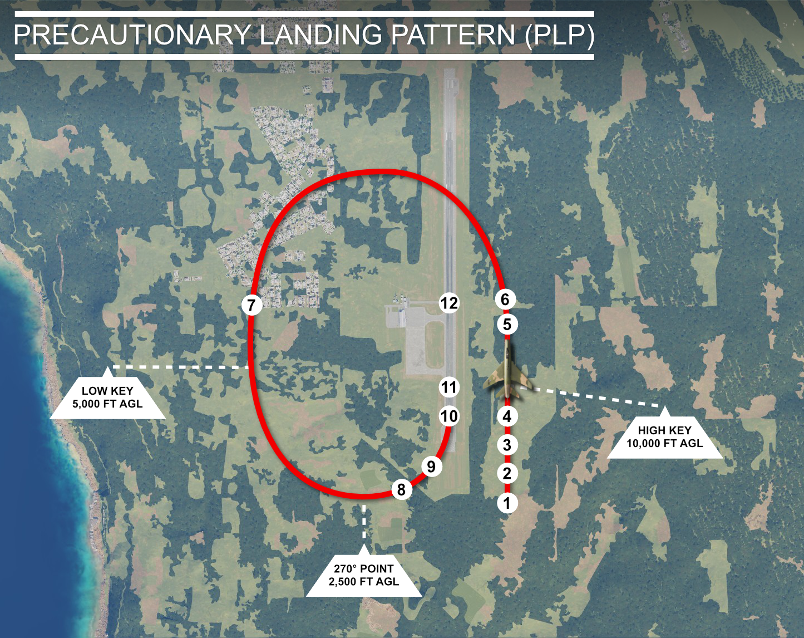
| Step | Explanation |
|---|---|
| 1. | External Load - JETTISION. |
| 2. | Engine Master and Generator Switches - OFF. |
| 3. | Fuel System Shutoff - OFF. |
| 4. | Emergency Hydraulic Pump Lever (RAT) - ON. |
| 5. | Shoulder Harness - LOCK. |
| 6. | Gear - DOWN. |
| 7. | Airspeed - 220 KIAS. Hold a constant speed of 220 KIAS in the pattern until on final. Fly a pattern. Varying flight path to make key points. Aim for one third point of runway. |
Warning
Avoid excess use of controls. Especially ailerons, as airplane control is marginal because of reduced hydraulic flow.
-
Airspeed - 200 KIAS. Hold pattern speed through final turn, playing the turn "long" or "short", for accurate touchdown. Reduce airspeed to 200 KIAS when straight in on final and maintain into flare.
-
Flaps - AS REQUIRED.
Caution
With a dead engine, speed brake is inoperative and use should not be attempted.
-
Drag Chute - DEPLOY.
-
Nose Wheel Steering - ENGAGE.
Warning
Nose wheel steering is unreliable because of low output of hydraulic pump at low windmill RPM during landing roll.
-
Battery Switch - OFF.
Because of the many variables, pilot evaluation of the factors and judgment will determine pattern and entry point requirements, However, there are some general procedures which are applicable: When on the final approach glide path:
- The landing gear should be down, the flaps down, and the RAT extended (if applicable).
- A normal glide path of 2-3 degrees should be flown, maintaining recommended computed final approach speed and avoiding excessive rate of descent.
- Power should be used as necessary to transition to a normal flared landing.
Recommended Glide
Recommended Glide
For glide distances with a windmilling or frozen engine, the recommended glide speed is 220 KIAS for a clean airplane, with landing gear and flaps up and speed brake in. At 220 KIAS the glide ratio is 11 to 1, for example, every 10,000 ft of altitude loss the airplane glides 18 NM.
The glide ratio and glide distances of the airplane without drop tanks but with landing gear down are about half those obtainable with the gear up.
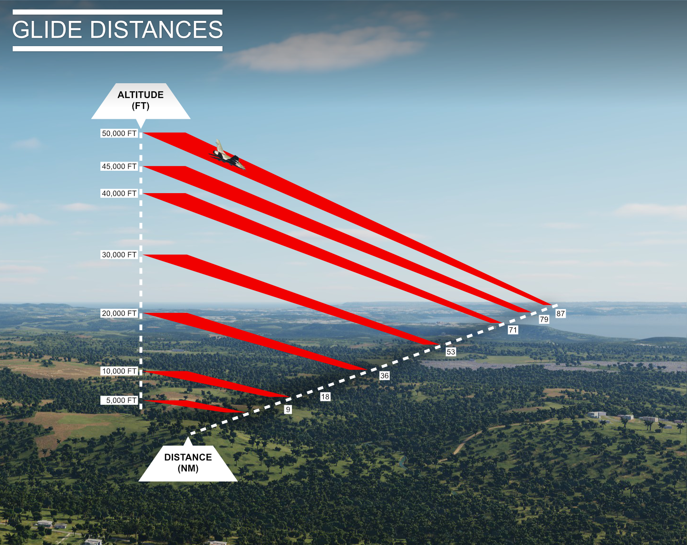
-
External Load - JETTISON.
Note
If landing on a prepared surface, retain empty drop tanks to cushion landing shock. If time and conditions permit, fire all ammunition and expend excess fuel to lighten airplane and minimize fire hazard.
-
Gear - DOWN.
-
Shoulder harness - LOCK.
-
Speed brake - UP.
-
Flaps - DOWN.
-
Throttle - OFF. When landing is ensured.
-
Engine master switch - OFF.
-
Touch down on extended gear. Hold opposite wing, or nose, off ground as long as possible, but lower while control is available.
-
Drag chute - DEPLOY.
Note
Glide distance with gear and flaps up, speed brake in, approximately 18 nautical miles per 10,000 feet descent.
Note
Glide distance with gear down approximately one-half glide distance of clean airplane.
Note
Distances shown are for a wings-level glide from altitude to touchdown.
Landing Gear Emergency Operation
Landing Gear Emergency Operation
Landing Gear Unsafe Indications
If an unsafe gear indication exists after moving the gear handle down, recycle the gear. If an unsafe condition still exists, use the landing gear emergency lowering procedures. Attempt to obtain a positive confirmation of the gear condition from the tower or chase plane. If gear appears to be down and locked, make normal landing and stop straight ahead. Do not taxi until gear ground safety pins have been installed.
Landing Gear Emergency Lowering
- Airspeed - BETWEEN 230 and 180 KIAS. Reduce airspeed to between 230 and 180 KIAS. Otherwise, air loads may hold gear doors closed. Below 180 KIAS, gear may not lock down.
- Landing gear handle - DOWN.
- Landing gear emergency handle - PULL.
- Landing gear position indicator - CHECK SAFE. The red warning light in the landing gear control handle should go out when the gear is down and locked, and landing gear position indicators should show safe indication. If these conditions are not present, proceed to step 5.
-
Gear position control circuit breaker - PULL. Pull gear position control circuit breaker on left circuit-breaker panel and repeat steps 1 through 4.
Note
Yaw airplane to lock main gear if gear down-and-locked indication does not appear after 15 seconds.
Note
Nose gear cannot be retracted in flight after being lowered by means of the landing gear emergency lowering handle.
Caution
Do not pull G in attempt to aid in locking gear down, as use of G increases landing gear lowering time and may cause damage to gear mechanism.
Landing With Any One Gear Up or Unlocked
Note
If either or both main landing gear cannot be locked down, an approach end arrestment should be considered if suitable barrier facilities are available.
If nose gear does not extend or lock down, or if one main gear does not extend and lock down (and the other cannot be retracted), proceed as follows:
-
External load — Jettison.
Note
If landing on a prepared surface, retain empty drop tanks to cushion landing shock, If time and conditions permit, fire all ammunition and expend excess fuel to lighten airplane and minimize fire hazard.
-
Gear — DOWN.
- Shoulder harness — Lock.
- Speed brake — UP.
- Flaps — DOWN.
- Throttle — OFF when landing is ensured.
- Engine master switch — OFF.
- Fuel system shutoff switch — OFF.
- Touch down on extended gear. Hold opposite wing, or nose, off ground as long as possible, but lower while control is available.
- Drag chute — Deploy.
-
Battery switch — OFF.
Note
Turn fuel system shutoff switch OFF before battery switch is turned OFF, so that battery power is available to close the fuel shutoff valve.
Note
Battery switch must be ON, if nose wheel steering or antiskid is required.
Main Gear Up or Belly Landing (Prepared Surface Only)
Note
If either or both main landing gear cannot be locked down, an approach end arrestment should be considered if suitable barrier facilities are available.
If an unsafe condition is confirmed for the main gear after the emergency lowering procedure is used or a belly landing is unavoidable, the following procedure should be used:
- Landing gear position control circuit breaker — Check in.
- Gear — UP. Retract main gear so that landing can be made on nose gear and aft fuselage (or empty drop tanks).
-
External load — Jettison (if necessary).
Note
Retain empty drop tanks to cushion landing shock and minimize airplane damage.
-
Shoulder harness — Lock.
- Drag chute — Deploy. Deploy drag chute while airborne, just before touchdown.
- Normal touchdown.
- Throttle - OFF. When landing is assured, move throttle to OFF.
- Nose wheel steering — Engage. Engage nose wheel steering if nose gear is extended, 9, Engine master switch — OFF.
- Fuel system shutoff switch — OFF.
-
Battery switch — OFF.
Note
Turn fuel system shutoff switch OFF before battery switch is turned OFF, so that battery power is available to close the fuel shutoff valve.
Note
Battery switch must be ON, if nose wheel steering or antiskid is required.
Landing on Unprepared Surfaces
Landings on unprepared surfaces are not recommended. However, if an emergency landing on an unprepared surface is unavoidable, it should be made with as many landing gear down as possible. Investigation has shown that landings made on unprepared surfaces with the landing gear down have resulted in less pilot injury and less damage to the airplane than those made with gear up. Empty drop tanks should be retained to cushion impact loads and minimize airplane damage as much as possible.
Landing With Arresting Hook Extended
Landing With Arresting Hook Extended
If the arresting hook is inadvertently released in flight, it will not introduce any problem while airborne, and a safe landing can be made with the hook extended. However, the following conditions must be considered: 1. With a normal 3-degree final approach in normal landing attitude, the tail hook extends approximately 13 feet below the CG of the airplane, and will contact the runway approximately 76 feet before the main landing gear touchdown. 2. Location and type of barriers on the approach end of the runway. 3. Condition of the approach end overrun and the lip of the prepared runway. If a landing must be made with an extended tail hook, and time is available, the barriers on the approach end should be removed to eliminate any possibility of an approach end engagement.
During final approach, fly a normal approach, maintaining a minimum height of 25 feet above any obstructions (runway barrier or runway lip) that could engage the tail hook.
Tire Failure
Tire Failure
Note
Avoid extreme rudder pedal deflections when nosewheel steering is engaged, since this may cause nose wheels to skid or skip sideways, and steering effectiveness will be lost.
Landing with Main Gear Tire Failure, or Failure During Landing
When landing with a flat main gear tire, lower gear in the normal manner and proceed as follows: 1. ANTISKID SWITCH — OFF. 2. Normal approach. (If airborne.) Land on side of runway that is away from flat tire. This will reduce the need for differential braking if the airplane pulls toward the low tire. 3. Normal touchdown. (If airborne.) 4. Nose wheel steering — Engage. 5. Drag chute — Deploy. 6. Wheel brakes — Maintain directional control. Use maximum brake away from swerve. Deliberately blowing the good tire may, or may not, be helpful in keeping the airplane on the runway. The airplane will tend to roll straighter with both main gear tires blown, but it is very difficult to turn under this condition. Braking efficiency is greatly reduced with both main gear tires blown.
Landing with Nose Gear Tire Failure
When landing is to be made with flat nose gear tire, lower gear in the normal manner and proceed as follows: 1. Normal touchdown. 2. Nose wheels — Hold off. Hold the nose wheels off as long as practical. 3. Drag chute — Deploy. The drag chute should be deployed while the nose wheels are still in the air. 4. Nose wheel steering -- Engage. As soon as the nose wheels touch down, engage nose wheel steering. 5. Wheel brakes — Maintain directional control.
Wheel Brakes Overheated
Wheel Brakes Overheated
At the first indication of brake malfunction, or if brakes are suspected to be overheated after excessive use, the airplane should be maneuvered off the active runway and stopped. The airplane should not be taxied into a crowded parking area. Overheated wheels and brakes must be cooled before the airplane is subsequently towed or taxied. Peak temperatures in the wheel and brake assembly are not attained until 5 to 15 minutes after a maximum braking operation is completed. In extreme cases, heat build-up can cause the wheel and tire to fail with explosive force or be destroyed by fire if proper cooling is not effected. Taxiing at low speeds to obtain air cooling of overheated brakes will not reduce temperatures adequately and can actually cause additional heat build-up.
Extras
DCS F-100D Super Sabre
F-100 Research Series
Episode 1 | Fuel System Failure & Inspection
Episode 2 | Tail Section Removal (Time Lapse)
Episode 3 | J57-23 Engine Removal (Time Lapse)
Episode 4 | Fuel System Repair
Episode 5 | J57-23 Engine Installation (Time Lapse)
Episode 6 | J57-23 Engine Test & Sound Recording
Episode 7 | Tail Section Installation (Time Lapse)
Episode 8 | Backseat Ground Tests
Episode 9 | F-100F & Onboard Kiowa Flight
Episode 10 | Repacking the Drag Chute
Episode 11 | Installing the Drag Chute
Episode 12 | F-100F Onboard Flight
DCS F-100D Super Sabre
Official Soundtrack


Death or Glory is the Official DCS: F-100D Super Sabre Soundtrack by Grinnelli Designs.
Featuring 10 original metal tracks, the album captures the raw energy and danger of the Super Sabre, a fighter born from an era where speed was survival and war was hell. Together with Dark Twin Productions, we shaped that vision into a full metal assault.
Music from Death or Glory is free to use in community videos and cinematics.